load("data/clinicaltrial.Rdata")
xtabs(~ drug + therapy, clin_trial) therapy
drug no.therapy CBT
placebo 3 3
anxifree 3 3
joyzepam 3 3Over the course of the last few chapters you can probably detect a general trend. We started out looking at tools that you can use to compare two groups to one another, most notably the \(t\)-test (The \(t\)-test). Then, we introduced analysis of variance (ANOVA) as a method for comparing more than two groups (Chapter 14). The chapter on regression (Linear regression) covered a somewhat different topic, but in doing so it introduced a powerful new idea: building statistical models that have multiple predictor variables used to explain a single outcome variable. For instance, a regression model could be used to predict the number of errors a student makes in a reading comprehension test based on the number of hours they studied for the test, and their score on a standardised IQ test. The goal in this chapter is to import this idea into the ANOVA framework. For instance, suppose we were interested in using the reading comprehension test to measure student achievements in three different schools, and we suspect that girls and boys are developing at different rates (and so would be expected to have different performance on average). Each student is classified in two different ways: on the basis of their gender, and on the basis of their school. What we’d like to do is analyse the reading comprehension scores in terms of both of these grouping variables. The tool for doing so is generically referred to as factorial ANOVA. However, since we have two grouping variables, we sometimes refer to the analysis as a two-way ANOVA, in contrast to the one-way ANOVAs that we ran in Chapter 14.
When we discussed analysis of variance in Chapter 14, we assumed a fairly simple experimental design: each person falls into one of several groups, and we want to know whether these groups have different means on some outcome variable. In this section, I’ll discuss a broader class of experimental designs, known as factorial designs, in which we have more than one grouping variable. I gave one example of how this kind of design might arise above. Another example appears in Chapter 14, in which we were looking at the effect of different drugs on the mood_gain experienced by each person. In that chapter we did find a significant effect of drug, but at the end of the chapter we also ran an analysis to see if there was an effect of therapy. We didn’t find one, but there’s something a bit worrying about trying to run two separate analyses trying to predict the same outcome. Maybe there actually is an effect of therapy on mood gain, but we couldn’t find it because it was being “hidden” by the effect of drug? In other words, we’re going to want to run a single analysis that includes both drug and therapy as predictors. For this analysis each person is cross-classified by the drug they were given (a factor with 3 levels) and what therapy they received (a factor with 2 levels). We refer to this as a \(3 \times 2\) factorial design. If we cross-tabulate drug by therapy, using the xtabs() function (see Frequency tables), we get the following table:
load("data/clinicaltrial.Rdata")
xtabs(~ drug + therapy, clin_trial) therapy
drug no.therapy CBT
placebo 3 3
anxifree 3 3
joyzepam 3 3As you can see, not only do we have participants corresponding to all possible combinations of the two factors, indicating that our design is completely crossed, it turns out that there are an equal number of people in each group. In other words, we have a balanced design. In this section I’ll talk about how to analyse data from balanced designs, since this is the simplest case. The story for unbalanced designs is quite tedious, so we’ll put it to one side for the moment.
Like one-way ANOVA, factorial ANOVA is a tool for testing certain types of hypotheses about population means. So a sensible place to start would be to be explicit about what our hypotheses actually are. However, before we can even get to that point, it’s really useful to have some clean and simple notation to describe the population means. Because of the fact that observations are cross-classified in terms of two different factors, there are quite a lot of different means that one might be interested in. To see this, let’s start by thinking about all the different sample means that we can calculate for this kind of design. Firstly, there’s the obvious idea that we might be interested in this table of group means:
aggregate(mood_gain ~ drug + therapy, clin_trial, mean) drug therapy mood_gain
1 placebo no.therapy 0.300000
2 anxifree no.therapy 0.400000
3 joyzepam no.therapy 1.466667
4 placebo CBT 0.600000
5 anxifree CBT 1.033333
6 joyzepam CBT 1.500000Now, this output shows a cross-tabulation of the group means for all possible combinations of the two factors (e.g., people who received the placebo and no therapy, people who received the placebo while getting CBT, etc). However, we can also construct tables that ignore one of the two factors. That gives us output that looks like this:
aggregate(mood_gain ~ drug, clin_trial, mean) drug mood_gain
1 placebo 0.4500000
2 anxifree 0.7166667
3 joyzepam 1.4833333aggregate(mood_gain ~ therapy, clin_trial, mean) therapy mood_gain
1 no.therapy 0.7222222
2 CBT 1.0444444But of course, if we can ignore one factor we can certainly ignore both. That is, we might also be interested in calculating the average mood gain across all 18 participants, regardless of what drug or psychological therapy they were given:
mean(clin_trial$mood_gain)[1] 0.8833333At this point we have 12 different sample means to keep track of! It is helpful to organise all these numbers into a single table, which would look like this:
| no therapy | CBT | total | |
|---|---|---|---|
| placebo | 0.30 | 0.60 | 0.45 |
| anxifree | 0.40 | 1.03 | 0.72 |
| joyzepam | 1.47 | 1.50 | 1.48 |
| total | 0.72 | 1.04 | 0.88 |
Now, each of these different means is of course a sample statistic: it’s a quantity that pertains to the specific observations that we’ve made during our study. What we want to make inferences about are the corresponding population parameters: that is, the true means as they exist within some broader population. Those population means can also be organised into a similar table, but we’ll need a little mathematical notation to do so. As usual, I’ll use the symbol \(\mu\) to denote a population mean. However, because there are lots of different means, I’ll need to use subscripts to distinguish between them.
Here’s how the notation works. Our table is defined in terms of two factors: each row corresponds to a different level of Factor A (in this case drug), and each column corresponds to a different level of Factor B (in this case therapy). If we let \(R\) denote the number of rows in the table, and \(C\) denote the number of columns, we can refer to this as an \(R \times C\) factorial ANOVA. In this case \(R=3\) and \(C=2\). We’ll use lowercase letters to refer to specific rows and columns, so \(\mu_{rc}\) refers to the population mean associated with the \(r\)th level of Factor A (i.e. row number \(r\)) and the \(c\)th level of Factor B (column number \(c\)).1 So the population means are now written like this:
1 The nice thing about the subscript notation is that it generalises nicely: if our experiment had involved a third factor, then we could just add a third subscript. In principle, the notation extends to as many factors as you might care to include, but in this book we’ll rarely consider analyses involving more than two factors, and never more than three.
| no therapy | CBT | total | |
|---|---|---|---|
| placebo | \(\mu_{11}\) | \(\mu_{12}\) | |
| anxifree | \(\mu_{21}\) | \(\mu_{22}\) | |
| joyzepam | \(\mu_{31}\) | \(\mu_{32}\) | |
| total |
Okay, what about the remaining entries? For instance, how should we describe the average mood gain across the entire (hypothetical) population of people who might be given Joyzepam in an experiment like this, regardless of whether they were in CBT? We use the “dot” notation to express this. In the case of Joyzepam, notice that we’re talking about the mean associated with the third row in the table. That is, we’re averaging across two cell means (i.e., \(\mu_{31}\) and \(\mu_{32}\)). The result of this averaging is referred to as a marginal mean, and would be denoted \(\mu_{3.}\) in this case. The marginal mean for CBT corresponds to the population mean associated with the second column in the table, so we use the notation \(\mu_{.2}\) to describe it. The grand mean is denoted \(\mu_{..}\) because it is the mean obtained by averaging (marginalising2) over both. So our full table of population means can be written down like this:
2 Technically, marginalising isn’t quite identical to a regular mean: it’s a weighted average, where you take into account the frequency of the different events that you’re averaging over. However, in a balanced design, all of our cell frequencies are equal by definition, so the two are equivalent. We’ll discuss unbalanced designs later, and when we do so you’ll see that all of our calculations become a real headache. But let’s ignore this for now.
| no therapy | CBT | total | |
|---|---|---|---|
| placebo | \(\mu_{11}\) | \(\mu_{12}\) | \(\mu_{1.}\) |
| anxifree | \(\mu_{21}\) | \(\mu_{22}\) | \(\mu_{2.}\) |
| joyzepam | \(\mu_{31}\) | \(\mu_{32}\) | \(\mu_{3.}\) |
| total | \(\mu_{.1}\) | \(\mu_{.2}\) | \(\mu_{..}\) |
Now that we have this notation, it is straightforward to formulate and express some hypotheses. Let’s suppose that the goal is to find out two things: firstly, does the choice of drug have any effect on mood, and secondly, does CBT have any effect on mood? These aren’t the only hypotheses that we could formulate of course, and we’ll see a really important example of a different kind of hypothesis in Section 16.2, but these are the two simplest hypotheses to test, and so we’ll start there. Consider the first test. If drug has no effect, then we would expect all of the row means to be identical, right? So that’s our null hypothesis. On the other hand, if the drug does matter then we should expect these row means to be different. Formally, we write down our null and alternative hypotheses in terms of the equality of marginal means:
| Null hypothesis, \(H_0\): | row means are the same, i.e., \(\mu_{1.} = \mu_{2.} = \mu_{3.}\) |
| Alternative hypothesis, \(H_1\): | at least one row mean is different. |
It’s worth noting that these are exactly the same statistical hypotheses that we formed when we ran a one-way ANOVA on these data back in Chapter 14. Back then I used the notation \(\mu_P\) to refer to the mean mood gain for the placebo group, with \(\mu_A\) and \(\mu_J\) corresponding to the group means for the two drugs, and the null hypothesis was \(\mu_P = \mu_A = \mu_J\). So we’re actually talking about the same hypothesis: it’s just that the more complicated ANOVA requires more careful notation due to the presence of multiple grouping variables, so we’re now referring to this hypothesis as \(\mu_{1.} = \mu_{2.} = \mu_{3.}\). However, as we’ll see shortly, although the hypothesis is identical, the test of that hypothesis is subtly different due to the fact that we’re now acknowledging the existence of the second grouping variable.
Speaking of the other grouping variable, you won’t be surprised to discover that our second hypothesis test is formulated the same way. However, since we’re talking about the psychological therapy rather than drugs, our null hypothesis now corresponds to the equality of the column means:
| Null hypothesis, \(H_0\): | column means are the same, i.e., \(\mu_{.1} = \mu_{.2}\) |
| Alternative hypothesis, \(H_1\): | column means are different, i.e., \(\mu_{.1} \neq \mu_{.2}\) |
The null and alternative hypotheses that I described in the last section should seem awfully familiar: they’re basically the same as the hypotheses that we were testing in our simpler one-way ANOVAs in Chapter 14. So you’re probably expecting that the hypothesis tests that are used in factorial ANOVA will be essentially the same as the \(F\)-test from Chapter 14. You’re expecting to see references to sums of squares (SS), mean squares (MS), degrees of freedom (df), and finally an \(F\)-statistic that we can convert into a \(p\)-value, right? Well, you’re absolutely and completely right. So much so that I’m going to depart from my usual approach. Throughout this book, I’ve generally taken the approach of describing the logic (and to an extent the mathematics) that underpins a particular analysis first; and only then introducing the R commands that you’d use to produce the analysis. This time I’m going to do it the other way around, and show you the R commands first. The reason for doing this is that I want to highlight the similarities between the simple one-way ANOVA tool that we discussed in Chapter 14, and the more complicated tools that we’re going to use in this chapter.
If the data you’re trying to analyse correspond to a balanced factorial design, then running your analysis of variance is easy. To see how easy it is, let’s start by reproducing the original analysis from Chapter 14. In case you’ve forgotten, for that analysis we were using only a single factor (i.e., drug) to predict our outcome variable (i.e., mood_gain), and so this was what we did:
model_1 <- aov(mood_gain ~ drug, clin_trial)
summary(model_1) Df Sum Sq Mean Sq F value Pr(>F)
drug 2 3.453 1.7267 18.61 8.65e-05 ***
Residuals 15 1.392 0.0928
---
Signif. codes: 0 '***' 0.001 '**' 0.01 '*' 0.05 '.' 0.1 ' ' 1Note that this time around I’ve used the name model_1 as the label for my aov object, since I’m planning on creating quite a few other models too. To start with, suppose I’m also curious to find out if therapy has a relationship to mood_gain. In light of what we’ve seen from our discussion of multiple regression in Linear regression, you probably won’t be surprised that all we have to do is extend the formula: in other words, if we specify mood_gain ~ drug + therapy as our model, we’ll probably get what we’re after:
model_2 <- aov(mood_gain ~ drug + therapy, clin_trial)
summary(model_2) Df Sum Sq Mean Sq F value Pr(>F)
drug 2 3.453 1.7267 26.149 1.87e-05 ***
therapy 1 0.467 0.4672 7.076 0.0187 *
Residuals 14 0.924 0.0660
---
Signif. codes: 0 '***' 0.001 '**' 0.01 '*' 0.05 '.' 0.1 ' ' 1This output is pretty simple to read too: the first row of the table reports a between-group sum of squares (SS) value associated with the drug factor, along with a corresponding between-group \(df\) value. It also calculates a mean square value (MS), an \(F\)-statistic and a \(p\)-value. There is also a row corresponding to the therapy factor, and a row corresponding to the residuals (i.e., the within groups variation).
Not only are all of the individual quantities pretty familiar, the relationships between these different quantities has remained unchanged: just like we saw with the original one-way ANOVA, note that the mean square value is calculated by dividing SS by the corresponding \(df\). That is, it’s still true that \[
\mbox{MS} = \frac{\mbox{SS}}{df}
\] regardless of whether we’re talking about drug, therapy or the residuals. To see this, let’s not worry about how the sums of squares values are calculated: instead, let’s take it on faith that R has calculated the SS values correctly, and try to verify that all the rest of the numbers make sense. First, note that for the drug factor, we divide \(3.45\) by \(2\), and end up with a mean square value of \(1.73\). For the therapy factor, there’s only 1 degree of freedom, so our calculations are even simpler: dividing \(0.47\) (the SS value) by 1 gives us an answer of \(0.47\) (the MS value).
Turning to the \(F\) statistics and the \(p\) values, notice that we have two of each: one corresponding to the drug factor and the other corresponding to the therapy factor. Regardless of which one we’re talking about, the \(F\) statistic is calculated by dividing the mean square value associated with the factor by the mean square value associated with the residuals. If we use “A” as shorthand notation to refer to the first factor (factor A; in this case drug) and “R” as shorthand notation to refer to the residuals, then the \(F\) statistic associated with factor A is denoted \(F_A\), and is calculated as follows: \[
F_{A} = \frac{\mbox{MS}_{A}}{\mbox{MS}_{R}}
\] and an equivalent formula exists for factor B (i.e., therapy). Note that this use of “R” to refer to residuals is a bit awkward, since we also used the letter R to refer to the number of rows in the table, but I’m only going to use “R” to mean residuals in the context of SS\(_R\) and MS\(_R\), so hopefully this shouldn’t be confusing. Anyway, to apply this formula to the drugs factor, we take the mean square of \(1.73\) and divide it by the residual mean square value of \(0.07\), which gives us an \(F\)-statistic of \(26.15\). The corresponding calculation for the therapy variable would be to divide \(0.47\) by \(0.07\) which gives \(7.08\) as the \(F\)-statistic. Not surprisingly, of course, these are the same values that R has reported in the ANOVA table above.
The last part of the ANOVA table is the calculation of the \(p\) values. Once again, there is nothing new here: for each of our two factors, what we’re trying to do is test the null hypothesis that there is no relationship between the factor and the outcome variable (I’ll be a bit more precise about this later on). To that end, we’ve (apparently) followed a similar strategy to what we did in the one-way ANOVA, and have calculated an \(F\)-statistic for each of these hypotheses. To convert these to \(p\) values, all we need to do is note that the sampling distribution for the \(F\) statistic under the null hypothesis (that the factor in question is irrelevant) is an \(F\) distribution, and that the two degrees of freedom values are those corresponding to the factor, and those corresponding to the residuals. For the drug factor we’re talking about an \(F\) distribution with 2 and 14 degrees of freedom (I’ll discuss degrees of freedom in more detail later). In contrast, for the therapy factor the sampling distribution is \(F\) with 1 and 14 degrees of freedom. If we really wanted to, we could calculate the \(p\) value ourselves using the pf() function (see Other useful distributions). Just to prove that there’s nothing funny going on, here’s what that would look like for the drug variable:
pf(q = 26.15, df1 = 2, df2 = 14, lower.tail = FALSE)[1] 1.871981e-05And as you can see, this is indeed the \(p\) value reported in the ANOVA table above.
At this point, I hope you can see that the ANOVA table for this more complicated analysis corresponding to model_2 should be read in much the same way as the ANOVA table for the simpler analysis for model_1. In short, it’s telling us that the factorial ANOVA for our \(3 \times 2\) design found a significant effect of drug (\(F_{2,14} = 26.15, p < .001\)) as well as a significant effect of therapy (\(F_{1,14} = 7.08, p = .02\)). Or, to use the more technically correct terminology, we would say that there are two main effects of drug and therapy. At the moment, it probably seems a bit redundant to refer to these as “main” effects: but it actually does make sense. Later on, we’re going to want to talk about the possibility of “interactions” between the two factors, and so we generally make a distinction between main effects and interaction effects.
In the previous section I had two goals: firstly, to show you that the R commands needed to do factorial ANOVA are pretty much the same ones that we used for a one-way ANOVA. The only difference is the formula argument to the aov() function. Secondly, I wanted to show you what the ANOVA table looks like in this case, so that you can see from the outset that the basic logic and structure behind factorial ANOVA is the same as that which underpins one-way ANOVA. Try to hold onto that feeling. It’s genuinely true, insofar as factorial ANOVA is built in more or less the same way as the simpler one-way ANOVA model. It’s just that this feeling of familiarity starts to evaporate once you start digging into the details. Traditionally, this comforting sensation is replaced by an urge to murder the authors of statistics textbooks.
Okay, let’s start looking at some of those details. The explanation that I gave in the last section illustrates the fact that the hypothesis tests for the main effects (of drug and therapy in this case) are \(F\)-tests, but what it doesn’t do is show you how the sum of squares (SS) values are calculated. Nor does it tell you explicitly how to calculate degrees of freedom (\(df\) values), though that’s a simple thing by comparison. Let’s assume for now that we have only two predictor variables, Factor A and Factor B. If we use \(Y\) to refer to the outcome variable, then we would use \(Y_{rci}\) to refer to the outcome associated with the \(i\)-th member of group \(rc\) (i.e., level/row \(r\) for Factor A and level/column \(c\) for Factor B). Thus, if we use \(\bar{Y}\) to refer to a sample mean, we can use the same notation as before to refer to group means, marginal means and grand means: that is, \(\bar{Y}_{rc}\) is the sample mean associated with the \(r\)th level of Factor A and the \(c\)th level of Factor B, \(\bar{Y}_{r.}\) would be the marginal mean for the \(r\)th level of Factor A, \(\bar{Y}_{.c}\) would be the marginal mean for the \(c\)th level of Factor B, and \(\bar{Y}_{..}\) is the grand mean. In other words, our sample means can be organised into the same table as the population means.
Now that we’ve got our notation straight, we can compute the sum of squares values for each of the two factors in a relatively familiar way. For Factor A, our between-group sum of squares is calculated by assessing the extent to which the (row) marginal means \(\bar{Y}_{1.}, \bar{Y}_{2.}\) etc, are different from the grand mean \(\bar{Y}_{..}\). We do this in the same way that we did for one-way ANOVA: calculate the sum of squared difference between the \(\bar{Y}_{r.}\) values and the \(\bar{Y}_{..}\) values. Specifically, if there are \(N\) people in each group, then we calculate this: \[
\mbox{SS}_{A} = (N \times C) \sum_{r=1}^R \left( \bar{Y}_{r.} - \bar{Y}_{..} \right)^2
\] As with one-way ANOVA, the most interesting3 part of this formula is the \(\left( \bar{Y}_{r.} - \bar{Y}_{..} \right)^2\) bit, which corresponds to the squared deviation associated with level \(r\). All that this formula does is calculate this squared deviation for all \(R\) levels of the factor, add them up, and then multiply the result by \(N \times C\). The reason for this last part is that there are multiple cells in our design that have level \(r\) on Factor A: in fact, there are \(C\) of them, one corresponding to each possible level of Factor B! For instance, in our toy example, there are two different cells in the design corresponding to the anxifree drug: one for people with no.therapy, and one for the CBT group. Not only that, within each of these cells there are \(N\) observations. So, if we want to convert our SS value into a quantity that calculates the between-groups sum of squares on a “per observation” basis, we have to multiply by \(N \times C\). The formula for factor B is of course the same thing, just with some subscripts shuffled around: \[
\mbox{SS}_{B} = (N \times R) \sum_{c=1}^C \left( \bar{Y}_{.c} - \bar{Y}_{..} \right)^2
\]
3 English translation: “least tedious”.
Now that we have these formulas, we can check them against the R output from the earlier section. First, notice that we calculated all the marginal means (i.e., row marginal means \(\bar{Y}_{r.}\) and column marginal means \(\bar{Y}_{.c}\)) earlier using aggregate(), and we also calculated the grand mean. Let’s repeat those calculations, but this time we’ll save the results to variables so that we can use them in subsequent calculations:
drug_means <- aggregate(mood_gain ~ drug, clin_trial, mean)[, 2]
therapy_means <- aggregate(mood_gain ~ therapy, clin_trial, mean)[, 2]
grand_mean <- mean(clin_trial$mood_gain)Okay, now let’s calculate the sum of squares associated with the main effect of drug. There are a total of \(N=3\) people in each group, and \(C=2\) different types of therapy. Or, to put it another way, there are \(3 \times 2 = 6\) people who received any particular drug. So our calculations are:
ss_drug <- (3 * 2) * sum((drug_means - grand_mean) ^ 2)
ss_drug[1] 3.453333Not surprisingly, this is the same number that you get when you look up the SS value for the drugs factor in the ANOVA table that I presented earlier. We can repeat the same kind of calculation for the effect of therapy. Again there are \(N=3\) people in each group, but since there are \(R=3\) different drugs, this time around we note that there are \(3 \times 3 = 9\) people who received CBT, and an additional 9 people who received the placebo. So our calculation is now:
ss_therapy <- (3 * 3) * sum((therapy_means - grand_mean) ^ 2)
ss_therapy[1] 0.4672222and we are, once again, unsurprised to see that our calculations are identical to the ANOVA output.
So that’s how you calculate the SS values for the two main effects. These SS values are analogous to the between-group sum of squares values that we calculated when doing one-way ANOVA in Chapter 14. However, it’s not a good idea to think of them as between-groups SS values anymore, just because we have two different grouping variables and it’s easy to get confused. In order to construct an \(F\) test, however, we also need to calculate the within-groups sum of squares. In keeping with the terminology that we used in Linear regression and the terminology that R uses when printing out the ANOVA table, I’ll start referring to the within-groups SS value as the residual sum of squares SS\(_R\).
The easiest way to think about the residual SS values in this context, I think, is to think of it as the leftover variation in the outcome variable after you take into account the differences in the marginal means (i.e., after you remove SS\(_A\) and SS\(_B\)). What I mean by that is we can start by calculating the total sum of squares, which I’ll label SS\(_T\). The formula for this is pretty much the same as it was for one-way ANOVA: we take the difference between each observation \(Y_{rci}\) and the grand mean \(\bar{Y}_{..}\), square the differences, and add them all up: \[ \mbox{SS}_T = \sum_{r=1}^R \sum_{c=1}^C \sum_{i=1}^N \left( Y_{rci} - \bar{Y}_{..}\right)^2 \] The “triple summation” here looks more complicated than it is. In the first two summations, we’re summing across all levels of Factor A (i.e., over all possible rows \(r\) in our table), and across all levels of Factor B (i.e., all possible columns \(c\)). Each \(rc\) combination corresponds to a single group, and each group contains \(N\) people: so we have to sum across all those people (i.e., all \(i\) values) too. In other words, all we’re doing here is summing across all observations in the data set (i.e., all possible \(rci\) combinations).
At this point, we know the total variability of the outcome variable SS\(_T\), and we know how much of that variability can be attributed to Factor A (SS\(_A\)) and how much of it can be attributed to Factor B (SS\(_B\)). The residual sum of squares is thus defined to be the variability in \(Y\) that can’t be attributed to either of our two factors. In other words: \[ \mbox{SS}_R = \mbox{SS}_T - (\mbox{SS}_A + \mbox{SS}_B) \] Of course, there is a formula that you can use to calculate the residual SS directly, but I think that it makes more conceptual sense to think of it like this. The whole point of calling it a residual is that it’s the leftover variation, and the formula above makes that clear. I should also note that, in keeping with the terminology used in the regression chapter, it is commonplace to refer to \(\mbox{SS}_A + \mbox{SS}_B\) as the variance attributable to the “ANOVA model”, denoted SS\(_M\), and so we often say that the total sum of squares is equal to the model sum of squares plus the residual sum of squares. Later on in this chapter we’ll see that this isn’t just a surface similarity: ANOVA and regression are actually the same thing under the hood.
In any case, it’s probably worth taking a moment to check that we can calculate SS\(_R\) using this formula, and verify that we do obtain the same answer that R produces in its ANOVA table. The calculations are pretty straightforward. First we calculate the total sum of squares:
ss_tot <- sum((clin_trial$mood_gain - grand_mean) ^ 2)
ss_tot[1] 4.845and then we use it to calculate the residual sum of squares:
ss_res <- ss_tot - (ss_drug + ss_therapy)
ss_res[1] 0.9244444Yet again, we get the same answer.
The degrees of freedom are calculated in much the same way as for one-way ANOVA. For any given factor, the degrees of freedom is equal to the number of levels minus 1 (i.e., \(R-1\) for the row variable, Factor A, and \(C-1\) for the column variable, Factor B). So, for the drugs factor we obtain \(df = 2\), and for the therapy factor we obtain \(df=1\). Later on, when we discuss the interpretation of ANOVA as a regression model (see Section 16.6) I’ll give a clearer statement of how we arrive at this number, but for the moment we can use the simple definition of degrees of freedom, namely that the degrees of freedom equals the number of quantities that are observed, minus the number of constraints. So, for the drugs factor, we observe 3 separate group means, but these are constrained by 1 grand mean; and therefore the degrees of freedom is 2. For the residuals, the logic is similar, but not quite the same. The total number of observations in our experiment is 18. The constraints correspond to the 1 grand mean, the 2 additional group means that the drug factor introduces, and the 1 additional group mean that the therapy factor introduces, and so our degrees of freedom is 14. As a formula, this is \(N-1 -(R-1)-(C-1)\), which simplifies to \(N-R-C+1\).
Now that we’ve seen how a factorial ANOVA works, it’s worth taking a moment to compare it to the results of the one-way analyses, because this will give us a really good sense of why it’s a good idea to run the factorial ANOVA. In Chapter 14 I ran a one-way ANOVA that looked to see if there are any differences between drugs, and a second one-way ANOVA to see if there were any differences between therapies. As we saw in Section 16.1.1, the null and alternative hypotheses tested by the one-way ANOVAs are in fact identical to the hypotheses tested by the factorial ANOVA. Looking even more carefully at the ANOVA tables, we can see that the sum of squares associated with the factors are identical in the two different analyses (3.45 for drug and 0.47 for therapy), as are the degrees of freedom (2 for drug, 1 for therapy). But they don’t give the same answers! Most notably, when we ran the one-way ANOVA for therapy in Section 14.11 we didn’t find a significant effect (the \(p\)-value was 0.21). However, when we look at the main effect of therapy within the context of the two-way ANOVA, we do get a significant effect (\(p=.019\)). The two analyses are clearly not the same.
Why does that happen? The answer lies in understanding how the residuals are calculated. Recall that the whole idea behind an \(F\)-test is to compare the variability that can be attributed to a particular factor with the variability that cannot be accounted for (the residuals). If you run a one-way ANOVA for therapy, and therefore ignore the effect of drug, the ANOVA will end up dumping all of the drug-induced variability into the residuals! This has the effect of making the data look more noisy than they really are, and the effect of therapy, which is correctly found to be significant in the two-way ANOVA, now becomes non-significant. If we ignore something that actually matters (e.g., drug) when trying to assess the contribution of something else (e.g., therapy) then our analysis will be distorted. Of course, it’s perfectly okay to ignore variables that are genuinely irrelevant to the phenomenon of interest: if we had recorded the colour of the walls, and that turned out to be non-significant in a three-way ANOVA (i.e. mood_gain ~ drug + therapy + wall.colour), it would be perfectly okay to disregard it and just report the simpler two-way ANOVA that doesn’t include this irrelevant factor. What you shouldn’t do is drop variables that actually make a difference!
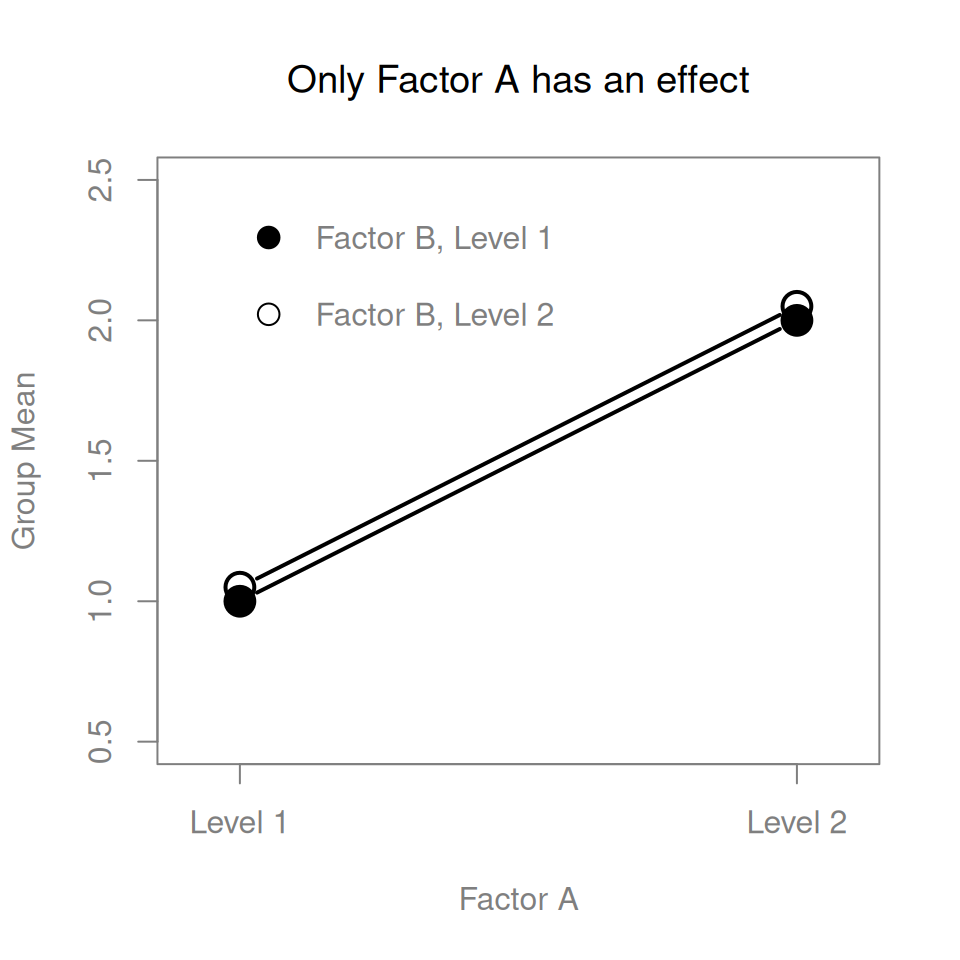
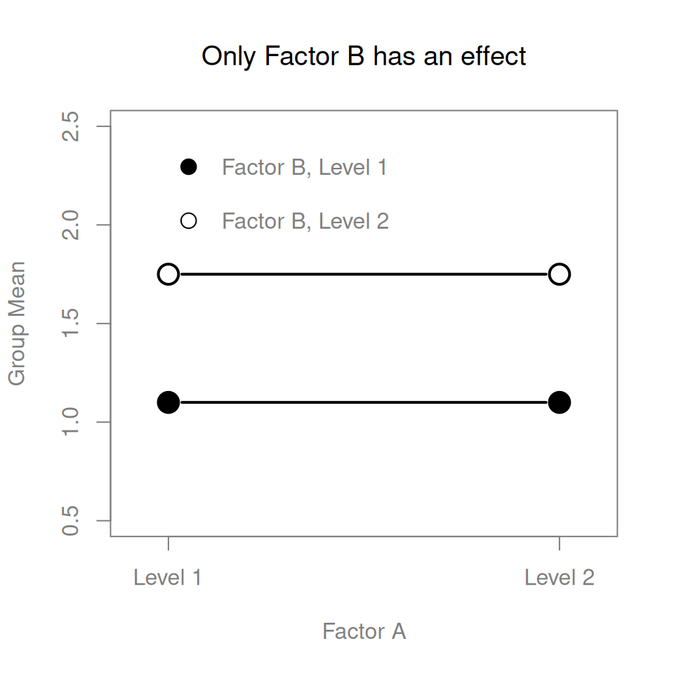
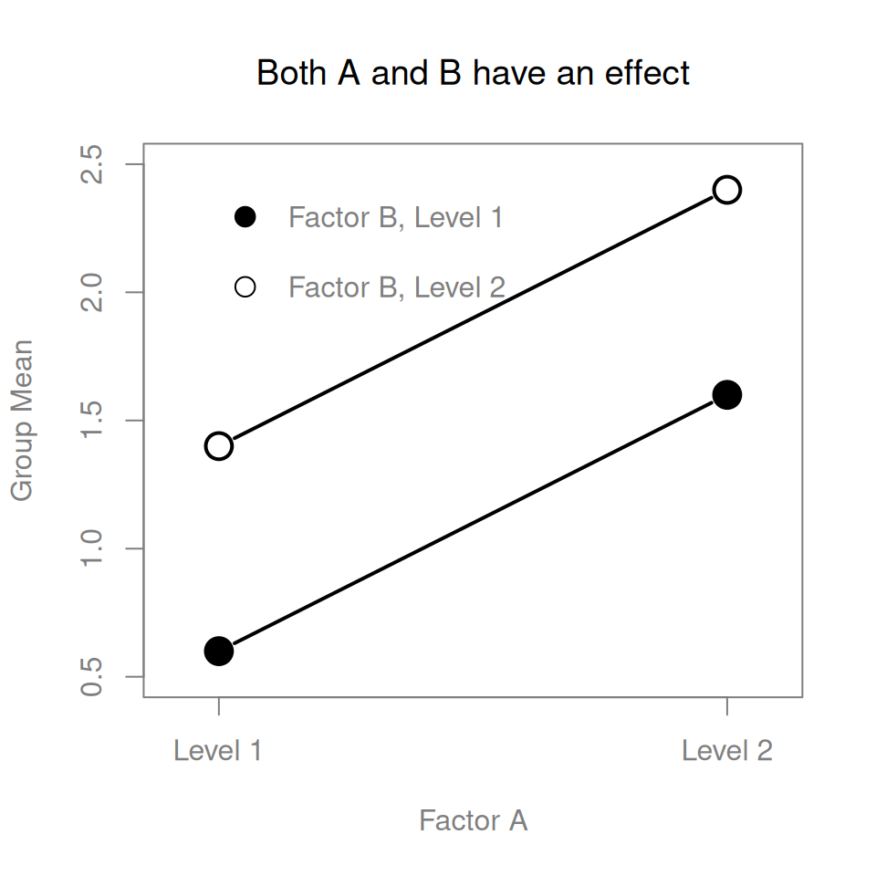
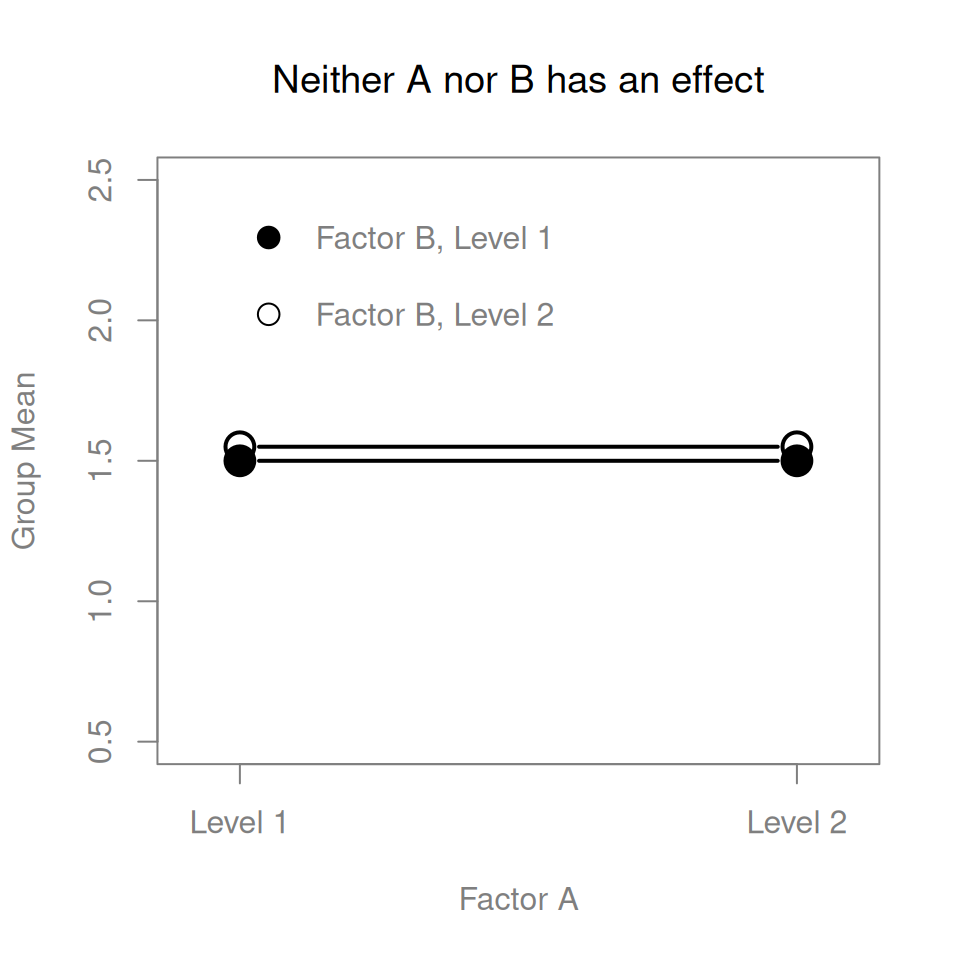
The ANOVA model that we’ve been talking about so far covers a range of different patterns that we might observe in our data. For instance, in a two-way ANOVA design, there are four possibilities: (a) only Factor A matters, (b) only Factor B matters, (c) both A and B matter, and (d) neither A nor B matters. An example of each of these four possibilities is plotted in Figure 16.1.
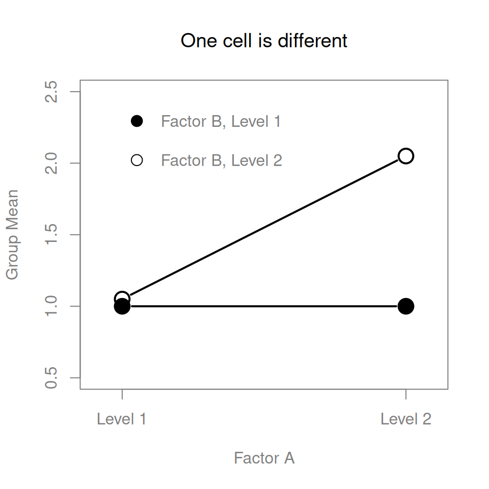
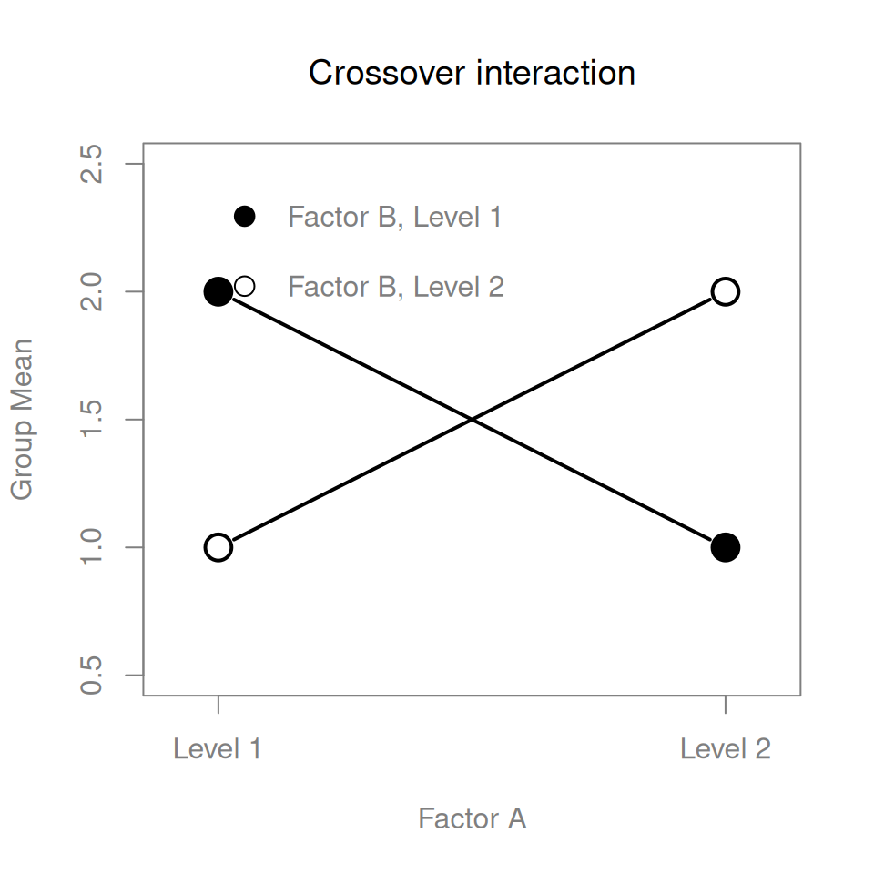
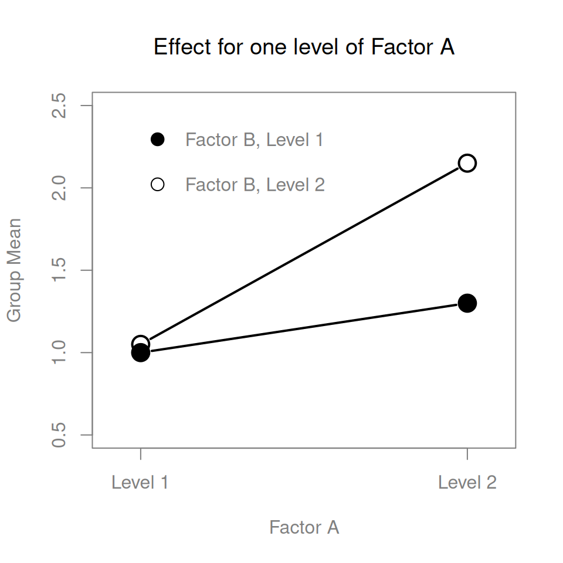
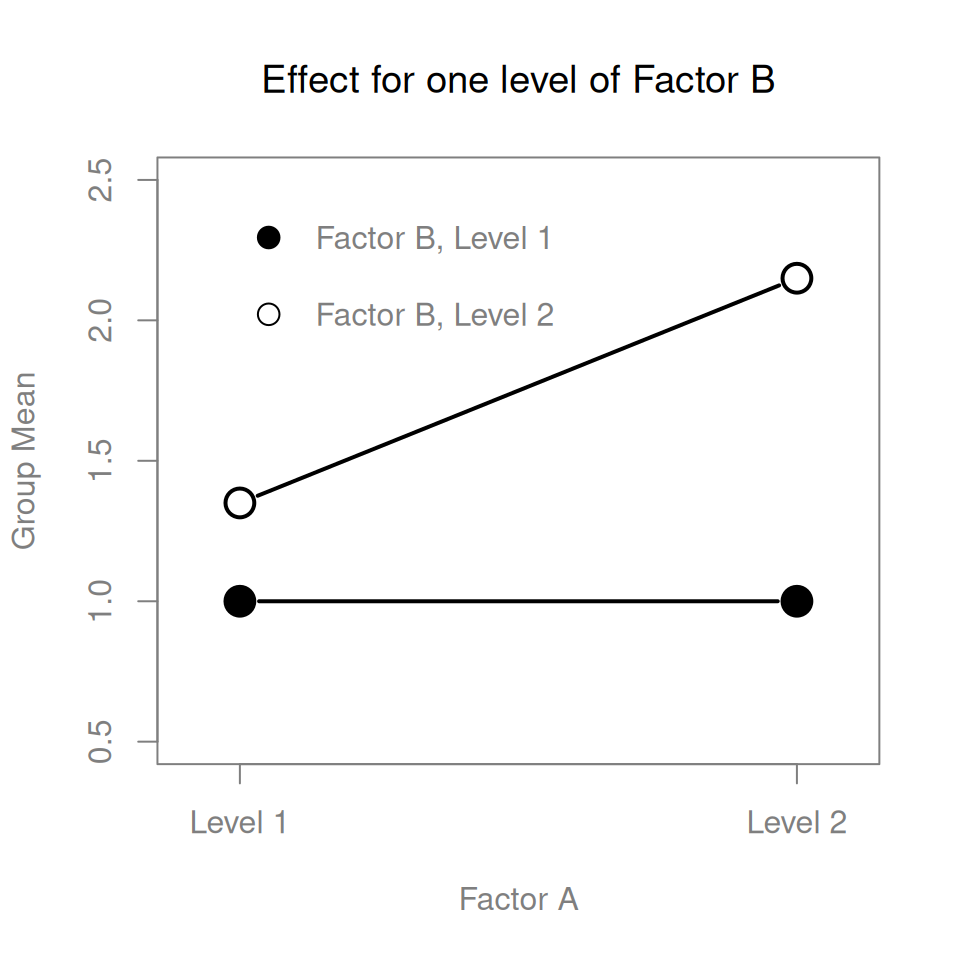
The four patterns of data shown in Figure 16.1 are all quite realistic: there are a great many data sets that produce exactly those patterns. However, they are not the whole story, and the ANOVA model that we have been talking about up to this point is not sufficient to fully account for a table of group means. Why not? Well, so far we have the ability to talk about the idea that drugs can influence mood, and therapy can influence mood, but no way of talking about the possibility of an interaction between the two. An interaction between A and B is said to occur whenever the effect of Factor A is different, depending on which level of Factor B we’re talking about. Several examples of an interaction effect within the context of a \(2 \times 2\) ANOVA are shown in Figure 16.2. To give a more concrete example, suppose that the operation of Anxifree and Joyzepam is governed by quite different physiological mechanisms, and one consequence of this is that while Joyzepam has more or less the same effect on mood regardless of whether one is in therapy, Anxifree is actually much more effective when administered in conjunction with CBT. The ANOVA that we developed in the previous section does not capture this idea. To get some idea of whether an interaction is actually happening here, it helps to plot the various group means. There are quite a few different ways to draw these plots in R. One easy way is to use the interaction.plot() function, but this function won’t draw error bars for you. A fairly simple function that will include error bars for you is the lineplot.CI() function in the sciplot package (see Drawing confidence intervals using bar graphs and line graphs). The command
lineplot.CI(
x.factor = clin_trial$drug,
response = clin_trial$mood_gain,
group = clin_trial$therapy,
ci.fun = ciMean,
xlab = "drug",
ylab = "mood gain"
)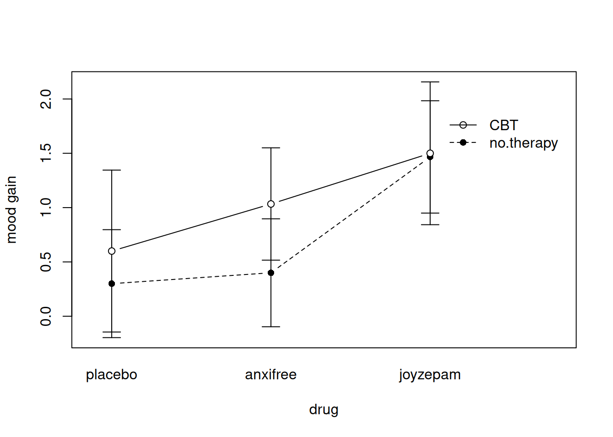
x.leg and y.leg arguments: type ?lineplot.CI for details.
produces the output shown in Figure 16.3 (don’t forget that the ciMean function is in the lsr package, so you need to have lsr loaded!). Our main concern relates to the fact that the two lines aren’t parallel. The effect of CBT (difference between solid line and dotted line) when the drug is Joyzepam (right side) appears to be near zero, even smaller than the effect of CBT when a placebo is used (left side). However, when Anxifree is administered, the effect of CBT is larger than the placebo (middle). Is this effect real, or is this just random variation due to chance? Our original ANOVA cannot answer this question, because we make no allowances for the idea that interactions even exist! In this section, we’ll fix this problem.
The key idea that we’re going to introduce in this section is that of an interaction effect. What that means for our R formulas is that we’ll write down models like
mood_gain ~ drug + therapy + drug:therapyso although there are only two factors involved in our model (i.e., drug and therapy), there are three distinct terms (i.e., drug, therapy and drug:therapy). That is, in addition to the main effects of drug and therapy, we have a new component to the model, which is our interaction term drug:therapy. Intuitively, the idea behind an interaction effect is fairly simple: it just means that the effect of Factor A is different, depending on which level of Factor B we’re talking about. But what does that actually mean in terms of our data? Figure 16.2 depicts several different patterns that, although quite different to each other, would all count as an interaction effect. So it’s not entirely straightforward to translate this qualitative idea into something mathematical that a statistician can work with. As a consequence, the way that the idea of an interaction effect is formalised in terms of null and alternative hypotheses is slightly difficult, and I’m guessing that a lot of readers of this book probably won’t be all that interested. Even so, I’ll try to give the basic idea here.
To start with, we need to be a little more explicit about our main effects. Consider the main effect of Factor A (drug in our running example). We originally formulated this in terms of the null hypothesis that the row marginal means \(\mu_{r.}\) are all equal to each other. Obviously, if all of these are equal to each other, then they must also be equal to the grand mean \(\mu_{..}\) as well, right? So what we can do is define the effect of Factor A at level \(r\) to be equal to the difference between the marginal mean \(\mu_{r.}\) and the grand mean \(\mu_{..}\). Let’s denote this effect by \(\alpha_r\), and note that \[
\alpha_r = \mu_{r.} - \mu_{..}
\] Now, by definition all of the \(\alpha_r\) values must sum to zero, for the same reason that the average of the marginal means \(\mu_{r.}\) must be the grand mean \(\mu_{..}\). We can similarly define the effect of Factor B at level \(c\) to be the difference between the column marginal mean \(\mu_{.c}\) and the grand mean \(\mu_{..}\): \[
\beta_c = \mu_{.c} - \mu_{..}
\] and once again, these \(\beta_c\) values must sum to zero. The reason that statisticians sometimes like to talk about the main effects in terms of these \(\alpha_r\) and \(\beta_c\) values is that it allows them to be precise about what it means to say that there is no interaction effect. If there is no interaction at all, then these \(\alpha_r\) and \(\beta_c\) values will perfectly describe the group means \(\mu_{rc}\). Specifically, it means that \[
\mu_{rc} = \mu_{..} + \alpha_r + \beta_c
\] That is, there’s nothing special about the group means that you couldn’t predict perfectly by knowing all the marginal means. And that’s our null hypothesis, right there. The alternative hypothesis is that \[
\mu_{rc} \neq \mu_{..} + \alpha_r + \beta_c
\] for at least one group \(rc\) in our table. However, statisticians often like to write this slightly differently. They’ll usually define the specific interaction associated with group \(rc\) to be some number, awkwardly referred to as \((\alpha\beta)_{rc}\), and then they will say that the alternative hypothesis is that \[
\mu_{rc} = \mu_{..} + \alpha_r + \beta_c + (\alpha\beta)_{rc}
\] where \((\alpha\beta)_{rc}\) is non-zero for at least one group. This notation is kind of ugly to look at, but it is handy, as we’ll see in the next section when discussing how to calculate the sum of squares.
How should we calculate the sum of squares for the interaction terms, SS\(_{A:B}\)? Well, first off, it helps to notice how the previous section defined the interaction effect in terms of the extent to which the actual group means differ from what you’d expect by just looking at the marginal means. Of course, all of those formulas refer to population parameters rather than sample statistics, so we don’t actually know what they are. However, we can estimate them by using sample means in place of population means. So for Factor A, a good way to estimate the main effect at level \(r\) is as the difference between the sample marginal mean \(\bar{Y}_{r.}\) and the sample grand mean \(\bar{Y}_{..}\). That is, we would use this as our estimate of the effect: \[ \hat{\alpha}_r = \bar{Y}_{r.} - \bar{Y}_{..} \] Similarly, our estimate of the main effect of Factor B at level \(c\) can be defined as follows: \[ \hat{\beta}_c = \bar{Y}_{.c} - \bar{Y}_{..} \] Now, if you go back to the formulas that I used to describe the SS values for the two main effects, you’ll notice that these effect terms are exactly the quantities that we were squaring and summing! So what’s the analog of this for interaction terms? The answer to this can be found by first rearranging the formula for the group means \(\mu_{rc}\) under the alternative hypothesis, so that we get this: \[ \begin{aligned} (\alpha \beta)_{rc} &= \mu_{rc} - \mu_{..} - \alpha_r - \beta_c \\ &= \mu_{rc} - \mu_{..} - (\mu_{r.} - \mu_{..}) - (\mu_{.c} - \mu_{..}) \\ &= \mu_{rc} - \mu_{r.} - \mu_{.c} + \mu_{..} \end{aligned} \] So, once again, if we substitute our sample statistics in place of the population means, we get the following as our estimate of the interaction effect for group \(rc\): \[ \hat{(\alpha\beta)}_{rc} = \bar{Y}_{rc} - \bar{Y}_{r.} - \bar{Y}_{.c} + \bar{Y}_{..} \] Now all we have to do is sum all of these estimates across all \(R\) levels of Factor A and all \(C\) levels of Factor B, and we obtain the following formula for the sum of squares associated with the interaction as a whole: \[ \mbox{SS}_{A:B} = N \sum_{r=1}^R \sum_{c=1}^C \left( \bar{Y}_{rc} - \bar{Y}_{r.} - \bar{Y}_{.c} + \bar{Y}_{..} \right)^2 \] where we multiply by \(N\) because there are \(N\) observations in each of the groups, and we want our SS values to reflect the variation among observations accounted for by the interaction, not the variation among groups.
Now that we have a formula for calculating SS\(_{A:B}\), it’s important to recognise that the interaction term is part of the model (of course), so the total sum of squares associated with the model, SS\(_M\), is now equal to the sum of the three relevant SS values, \(\mbox{SS}_A + \mbox{SS}_B + \mbox{SS}_{A:B}\). The residual sum of squares \(\mbox{SS}_R\) is still defined as the leftover variation, namely \(\mbox{SS}_T - \mbox{SS}_M\), but now that we have the interaction term this becomes \[ \mbox{SS}_R = \mbox{SS}_T - (\mbox{SS}_A + \mbox{SS}_B + \mbox{SS}_{A:B}) \] As a consequence, the residual sum of squares SS\(_R\) will be smaller than in our original ANOVA that didn’t include interactions.
Calculating the degrees of freedom for the interaction is, once again, slightly trickier than the corresponding calculation for the main effects. To start with, let’s think about the ANOVA model as a whole. Once we include interaction effects in the model, we’re allowing every single group to have a unique mean, \(\mu_{rc}\). For an \(R \times C\) factorial ANOVA, this means that there are \(R \times C\) quantities of interest in the model, and only one constraint: all of the group means need to average out to the grand mean. So the model as a whole needs to have \((R\times C) - 1\) degrees of freedom. But the main effect of Factor A has \(R-1\) degrees of freedom, and the main effect of Factor B has \(C-1\) degrees of freedom. Which means that the degrees of freedom associated with the interaction is \[ \begin{aligned} df_{A:B} &= (R\times C - 1) - (R - 1) - (C -1 ) \\ &= RC - R - C + 1 \\ &= (R-1)(C-1) \end{aligned} \] which is just the product of the degrees of freedom associated with the row factor and the column factor.
What about the residual degrees of freedom? Because we’ve added interaction terms, which absorb some degrees of freedom, there are fewer residual degrees of freedom left over. Specifically, note that if the model with interaction has a total of \((R\times C) - 1\) degrees of freedom, and there are \(N\) observations in your data set that are constrained to satisfy 1 grand mean, your residual degrees of freedom become \(N-(R \times C)-1+1\), or just \(N-(R \times C)\).
Adding interaction terms to the ANOVA model in R is straightforward. Returning to our running example of the clinical trial, in addition to the main effect terms of drug and therapy, we include the interaction term drug:therapy. So the R command to create the ANOVA model now looks like this:
model_3 <- aov(mood_gain ~ drug + therapy + drug:therapy, clin_trial)However, R allows a convenient shorthand. Instead of typing out all three terms, you can shorten the right hand side of the formula to drug*therapy. The * operator inside the formula is taken to indicate that you want both main effects and the interaction. So we can also run our ANOVA like this, and get the same answer:
model_3 <- aov(mood_gain ~ drug * therapy, clin_trial)
summary(model_3) Df Sum Sq Mean Sq F value Pr(>F)
drug 2 3.453 1.7267 31.714 1.62e-05 ***
therapy 1 0.467 0.4672 8.582 0.0126 *
drug:therapy 2 0.271 0.1356 2.490 0.1246
Residuals 12 0.653 0.0544
---
Signif. codes: 0 '***' 0.001 '**' 0.01 '*' 0.05 '.' 0.1 ' ' 1As it turns out, while we do have a significant main effect of drug (\(F_{2,12} = 31.7, p <.001\)) and therapy type (\(F_{1,12} = 8.6, p=.013\)), there is no significant interaction between the two (\(F_{2,12} = 2.5, p = 0.125\)).
There’s a couple of very important things to consider when interpreting the results of factorial ANOVA. Firstly, there’s the same issue that we had with one-way ANOVA, which is that if you obtain a significant main effect of (say) drug, it doesn’t tell you anything about which drugs are different to one another. To find that out, you need to run additional analyses. We’ll talk about some analyses that you can run in Section 16.8 and Section 16.9. The same is true for interaction effects: knowing that there’s a significant interaction doesn’t tell you anything about what kind of interaction exists. Again, you’ll need to run additional analyses.
Secondly, there’s a very peculiar interpretation issue that arises when you obtain a significant interaction effect but no corresponding main effect. This happens sometimes. For instance, in a crossover interaction like the one shown in panel (b) of Figure 16.2, this is exactly what you’d find: in this case, neither of the main effects would be significant, but the interaction effect would be. This is a difficult situation to interpret, and people often get a bit confused about it. The general advice that statisticians like to give in this situation is that you shouldn’t pay much attention to the main effects when an interaction is present. The reason they say this is that, although the tests of the main effects are perfectly valid from a mathematical point of view, when there is a significant interaction effect the main effects rarely test interesting hypotheses. Recall from Section 16.1.1 that the null hypothesis for a main effect is that the marginal means are equal to each other, and that a marginal mean is formed by averaging across several different groups. But if you have a significant interaction effect, then you know that the groups that comprise the marginal mean aren’t homogeneous, so it’s not really obvious why you would even care about those marginal means.
Here’s what I mean. Again, let’s stick with a clinical example. Suppose that we had a \(2 \times 2\) design comparing two different treatments for phobias (e.g., systematic desensitisation vs flooding), and two different anxiety-reducing drugs (e.g., Anxifree vs Joyzepam). Now suppose what we found was that Anxifree had no effect when desensitisation was the treatment, and Joyzepam had no effect when flooding was the treatment. But both were pretty effective for the other treatment. This is a classic crossover interaction, and what we’d find when running the ANOVA is that there is no main effect of drug, but a significant interaction. Now, what does it actually mean to say that there’s no main effect? Well, it means that, if we average over the two different psychological treatments, then the average effect of Anxifree and Joyzepam is the same. But why would anyone care about that? When treating someone for phobias, it is never the case that a person can be treated using an “average” of flooding and desensitisation: that doesn’t make a lot of sense. You either get one or the other. For one treatment, one drug is effective; and for the other treatment, the other drug is effective. The interaction is the important thing; the main effect is kind of irrelevant.
This sort of thing happens a lot: the main effects are tests of marginal means, and when an interaction is present we often find ourselves not being terribly interested in marginal means, because they imply averaging over things that the interaction tells us shouldn’t be averaged! Of course, it’s not always the case that a main effect is meaningless when an interaction is present. Often you can get a big main effect and a very small interaction, in which case you can still say things like “drug A is generally more effective than drug B” (because there was a big effect of drug), but you’d need to modify it a bit by adding that “the difference in effectiveness was different for different psychological treatments”. In any case, the main point here is that whenever you get a significant interaction you should stop and think about what the main effect actually means in this context. Don’t automatically assume that the main effect is interesting.
In this section I’ll discuss a few additional quantities that you might find yourself wanting to calculate for a factorial ANOVA. The main thing you will probably want to calculate is the effect size for each term in your model, but you may also want R to give you some estimates for the group means and associated confidence intervals.
The effect size calculations for a factorial ANOVA are pretty similar to those used in one-way ANOVA (see Effect size). Specifically, we can use \(\eta^2\) (eta-squared) as a simple way to measure how big the overall effect is for any particular term. As before, \(\eta^2\) is defined by dividing the sum of squares associated with that term by the total sum of squares. For instance, to determine the size of the main effect of Factor A, we would use the following formula: \[ \eta_A^2 = \frac{\mbox{SS}_{A}}{\mbox{SS}_{T}} \] As before, this can be interpreted in much the same way as \(R^2\) in regression.4 It tells you the proportion of variance in the outcome variable that can be accounted for by the main effect of Factor A. It is therefore a number that ranges from 0 (no effect at all) to 1 (accounts for all of the variability in the outcome). Moreover, the sum of all the \(\eta^2\) values, taken across all the terms in the model, will sum to the total \(R^2\) for the ANOVA model. If, for instance, the ANOVA model fits perfectly (i.e., there is no within-groups variability at all!), the \(\eta^2\) values will sum to 1. Of course, that rarely if ever happens in real life.
4 This chapter seems to be setting a new record for the number of different things that the letter R can stand for: so far we have R referring to the software package, the number of rows in our table of means, the residuals in the model, and now the correlation coefficient in a regression. Sorry: we clearly don’t have enough letters in the alphabet. However, I’ve tried pretty hard to be clear on which thing R is referring to in each case.
However, when doing a factorial ANOVA, there is a second measure of effect size that people like to report, known as partial \(\eta^2\). The idea behind partial \(\eta^2\) (which is sometimes denoted \(_p\eta^2\) or \(\eta^2_p\)) is that, when measuring the effect size for a particular term (say, the main effect of Factor A), you want to deliberately ignore the other effects in the model (e.g., the main effect of Factor B). That is, you would pretend that the effect of all these other terms is zero, and then calculate what the \(\eta^2\) value would have been. This is actually pretty easy to calculate. All you have to do is remove the sum of squares associated with the other terms from the denominator. In other words, if you want the partial \(\eta^2\) for the main effect of Factor A, the denominator is just the sum of the SS values for Factor A and the residuals: \[ \mbox{partial } \eta^2_A = \frac{\mbox{SS}_{A}}{\mbox{SS}_{A} + \mbox{SS}_{R}} \] This will always give you a larger number than \(\eta^2\), which the cynic in me suspects accounts for the popularity of partial \(\eta^2\). And once again you get a number between 0 and 1, where 0 represents no effect. However, it’s slightly trickier to interpret what a large partial \(\eta^2\) value means. In particular, you can’t actually compare the partial \(\eta^2\) values across terms! Suppose, for instance, there is no within-groups variability at all: if so, SS\(_R = 0\). What that means is that every term has a partial \(\eta^2\) value of 1. But that doesn’t mean that all terms in your model are equally important, or indeed that they are equally large. All it means is that all terms in your model have effect sizes that are large relative to the residual variation. It is not comparable across terms.
To see what I mean by this, it’s useful to see a concrete example. Once again, we’ll use the etaSquared() function from the lsr package. As before, we input the aov object for which we want the \(\eta^2\) calculations performed, and R outputs a matrix showing the effect sizes for each term in the model. First, let’s have a look at the effect sizes for the original ANOVA without the interaction term:
etaSquared(model_2) eta.sq eta.sq.part
drug 0.7127623 0.7888325
therapy 0.0964339 0.3357285Looking at the \(\eta^2\) values first, we see that drug accounts for 71.3% of the variance (i.e. \(\eta^2 = 0.713\)) in mood_gain, whereas therapy only accounts for 9.6%. This leaves a total of 19.1% of the variation unaccounted for (i.e., the residuals constitute 19.1% of the variation in the outcome). Overall, this implies that we have a very large effect5 of drug and a modest effect of therapy.
5 Implausibly large, I would think: the artificiality of this data set is really starting to show!
Now let’s look at the partial \(\eta^2\) values. Because the effect of therapy isn’t all that large, controlling for it doesn’t make much of a difference, so the partial \(\eta^2\) for drug doesn’t increase very much, and we obtain a value of \(_p\eta^2 = 0.789\). In contrast, because the effect of drug was very large, controlling for it makes a big difference, and so when we calculate the partial \(\eta^2\) for therapy you can see that it rises to \(_p\eta^2 = 0.336\). The question that we have to ask ourselves is, what does these partial \(\eta^2\) values actually mean? The way I generally interpret the partial \(\eta^2\) for the main effect of Factor A is to interpret it as a statement about a hypothetical experiment in which only Factor A was being varied. So, even though in this experiment we varied both A and B, we can easily imagine an experiment in which only Factor A was varied: the partial \(\eta^2\) statistic tells you how much of the variance in the outcome variable you would expect to see accounted for in that experiment. However, it should be noted that this interpretation – like many things associated with main effects – doesn’t make a lot of sense when there is a large and significant interaction effect.
Speaking of interaction effects, here’s what we get when we calculate the effect sizes for the model that includes the interaction term. As you can see, the \(\eta^2\) values for the main effects don’t change, but the partial \(\eta^2\) values do:
etaSquared(model_3) eta.sq eta.sq.part
drug 0.71276230 0.8409091
therapy 0.09643390 0.4169559
drug:therapy 0.05595689 0.2932692In many situations you will find yourself wanting to report estimates of all the group means based on the results of your ANOVA, as well as confidence intervals associated with them. You can use the effect() function in the effects package to do this (don’t forget to install the package if you don’t have it already!). If the ANOVA that you have run is a saturated model (i.e., contains all possible main effects and all possible interaction effects) then the estimates of the group means are actually identical to the sample means, though the confidence intervals will use a pooled estimate of the standard errors, rather than a separate one for each group. To illustrate this, let’s apply the effect() function to our saturated model (i.e., model_3) for the clinical trial data. The effect() function contains two arguments we care about: the term argument specifies what terms in the model we want the means to be calculated for, and the mod argument specifies the model:
eff <- effect(term = "drug*therapy", mod = model_3)
eff
drug*therapy effect
therapy
drug no.therapy CBT
placebo 0.300000 0.600000
anxifree 0.400000 1.033333
joyzepam 1.466667 1.500000Notice that these are actually the same numbers we got when computing the sample means earlier. One useful thing that we can do using the effect variable eff, however, is extract the confidence intervals using the summary() function:
summary(eff)
drug*therapy effect
therapy
drug no.therapy CBT
placebo 0.300000 0.600000
anxifree 0.400000 1.033333
joyzepam 1.466667 1.500000
Lower 95 Percent Confidence Limits
therapy
drug no.therapy CBT
placebo 0.006481093 0.3064811
anxifree 0.106481093 0.7398144
joyzepam 1.173147759 1.2064811
Upper 95 Percent Confidence Limits
therapy
drug no.therapy CBT
placebo 0.5935189 0.8935189
anxifree 0.6935189 1.3268522
joyzepam 1.7601856 1.7935189In this output, we see that the estimated mean mood gain for the placebo group with no therapy was 0.300, with a 95% confidence interval from 0.006 to 0.594. Note that these are not the same confidence intervals that you would get if you calculated them separately for each group, because of the fact that the ANOVA model assumes homogeneity of variance and therefore uses a pooled estimate of the standard deviation.
When the model doesn’t contain the interaction term, then the estimated group means will be different from the sample means. Instead of reporting the sample mean, the effect() function will calculate the value of the group means that would be expected on the basis of the marginal means (i.e., assuming no interaction). Using the notation we developed earlier, the estimate reported for \(\mu_{rc}\), the mean for level \(r\) on the (row) Factor A and level \(c\) on the (column) Factor B, would be \(\mu_{..} + \alpha_r + \beta_c\). If there are genuinely no interactions between the two factors, this is actually a better estimate of the population mean than the raw sample mean would be. The command to obtain these estimates is actually identical to the last one, except that we use model_2. When you do this, R will give you a warning message:
eff <- effect("drug*therapy", model_2)NOTE: drug:therapy does not appear in the modelbut this isn’t anything to worry about. This is R being polite, and letting you know that the estimates it is constructing are based on the assumption that no interactions exist. It kind of makes sense that it would do this: when we use "drug*therapy" as our input, we’re telling R that we want it to output the estimated group means (rather than marginal means), but the actual input "drug*therapy" might mean that you want interactions included or you might not. There’s no actual ambiguity here, because the model itself either does or doesn’t have interactions, but the authors of the function thought it sensible to include a warning just to make sure that you’ve specified the actual model you care about. But, assuming that we genuinely don’t believe that there are any interactions, model_2 is the right model to use, so we can ignore this warning.6 In any case, when we inspect the output, we get the following table of estimated group means:
6 In fact, there’s a function Effect() within the effects package that has slightly different arguments, but computes the same things, and won’t give you this warning message.
eff
drug*therapy effect
therapy
drug no.therapy CBT
placebo 0.2888889 0.6111111
anxifree 0.5555556 0.8777778
joyzepam 1.3222222 1.6444444As before, we can obtain confidence intervals using the following command:
summary(eff)but the output looks pretty much the same as last time, and this book is already way too long, so I won’t include it here.
As with one-way ANOVA, the key assumptions of factorial ANOVA are homogeneity of variance (all groups have the same standard deviation), normality of the residuals, and independence of the observations. The first two are things we can test for. The third is something that you need to assess yourself by asking if there are any special relationships between different observations. Additionally, if you aren’t using a saturated model (e.g., if you’ve omitted the interaction terms) then you’re also assuming that the omitted terms aren’t important. Of course, you can check this last one by running an ANOVA with the omitted terms included and see if they’re significant, so that’s pretty easy. What about homogeneity of variance and normality of the residuals? As it turns out, these are pretty easy to check: it’s no different to the checks we did for a one-way ANOVA.
To test whether the groups have the same variance, we can use the Levene test. The theory behind the Levene test was discussed in Checking the homogeneity of variance assumption, so I won’t discuss it again. Once again, you can use the leveneTest() function in the car package to do this. This function expects that you have a saturated model (i.e., included all of the relevant terms), because the test is primarily concerned with the within-group variance, and it doesn’t really make a lot of sense to calculate this any way other than with respect to the full model. So we try either of the following commands:
leveneTest(model_2)Error in `leveneTest.formula()`:
! Model must be completely crossed formula only.leveneTest(mood_gain ~ drug + therapy, clin_trial)Error in `leveneTest.formula()`:
! Model must be completely crossed formula only.R will spit out an error, because leveneTest() requires a fully crossed formula. Instead, if you want to run the Levene test, you need to specify a saturated model. Either of the following two commands would work:7
7 Due to the way that the leveneTest() function is implemented, however, if you use a formula like mood_gain ~ drug + therapy + drug:therapy, or input an ANOVA object based on a formula like this, you actually get the error message. That shouldn’t happen, because this actually is a fully crossed model. However, there’s a quirky shortcut in the way that the leveneTest() function checks whether your model is fully crossed that means that it doesn’t recognise this as a fully crossed model. Essentially what the function is doing is checking that you used * (which ensures that the model is fully crossed), and not + or : in your model formula. So if you’ve manually typed out all of the relevant terms for a fully crossed model, the leveneTest() function doesn’t detect it. I think this is a bug.
leveneTest(model_3)Levene's Test for Homogeneity of Variance (center = median)
Df F value Pr(>F)
group 5 0.0955 0.9912
12 leveneTest(mood_gain ~ drug * therapy, clin_trial)Levene's Test for Homogeneity of Variance (center = median)
Df F value Pr(>F)
group 5 0.0955 0.9912
12 The fact that the Levene test is non-significant means that we can safely assume that the homogeneity of variance assumption is not violated.
As with one-way ANOVA, we can test for the normality of residuals in a straightforward fashion (see Checking the normality assumption). First, we use the residuals() function to extract the residuals from the model itself, and then we can examine those residuals in a few different ways. It’s generally a good idea to examine them graphically, by drawing histograms (i.e., hist() function) and QQ plots (i.e., qqnorm() function). If you want a formal test for the normality of the residuals, then we can run the Shapiro-Wilk test (i.e., shapiro.test()). If we wanted to check the residuals with respect to model_2 (i.e., the model with both main effects but no interactions) then we could do the following:
resid <- residuals(model_2) # pull the residuals
hist(resid) # draw a histogram
qqnorm(resid) # draw a normal QQ plot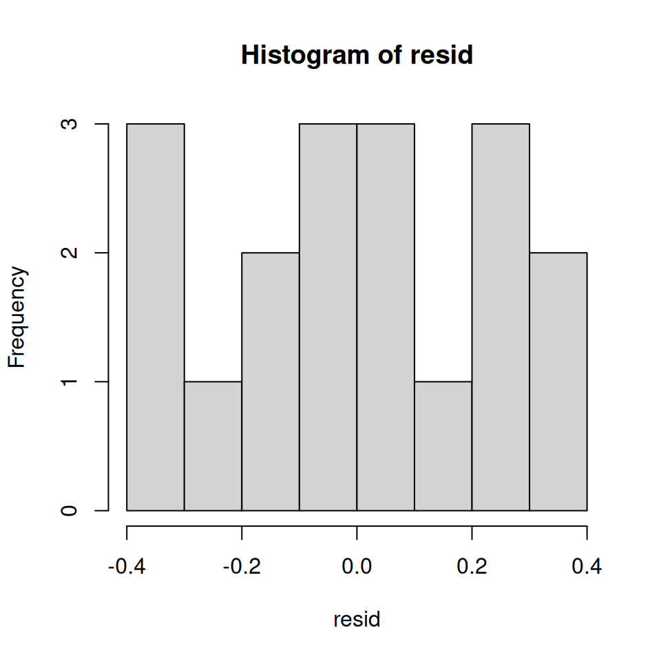
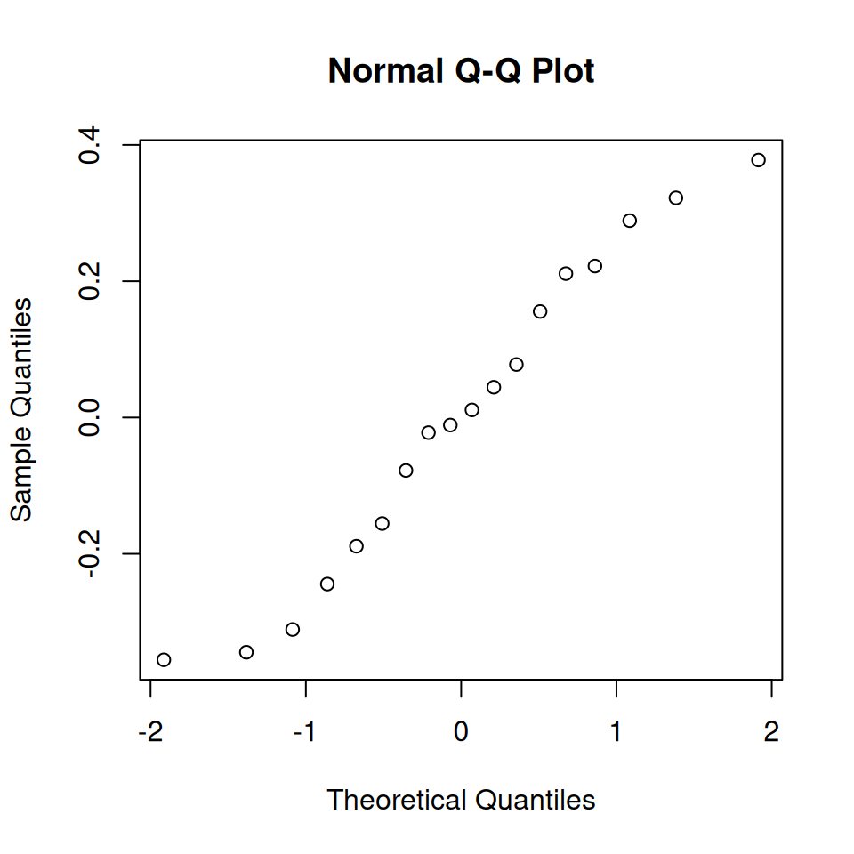
model_2.
shapiro.test(resid) # run the Shapiro-Wilk test
Shapiro-Wilk normality test
data: resid
W = 0.95635, p-value = 0.5329You can see from the non-significance of the Shapiro-Wilk test, together with Figure 16.4, that normality isn’t violated here.
At this point, I want to talk in a little more detail about what the \(F\)-tests in an ANOVA are actually doing. In the context of ANOVA, I’ve been referring to the \(F\)-test as a way of testing whether a particular term in the model (e.g., main effect of Factor A) is significant. This interpretation is perfectly valid, but it’s not necessarily the most useful way to think about the test. In fact, it’s actually a fairly limiting way of thinking about what the \(F\)-test does. Consider the clinical trial data we’ve been working with in this chapter. Suppose I want to see if there are any effects of any kind that involve therapy. I’m not fussy: I don’t care if it’s a main effect or an interaction effect.8 One thing I could do is look at the output for model_3 earlier: in this model we did see a main effect of therapy (\(p=.013\)) but we did not see an interaction effect (\(p=.125\)). That’s kind of telling us what we want to know, but it’s not quite the same thing. What we really want is a single test that jointly checks the main effect of therapy and the interaction effect.
8 There could be all sorts of reasons for doing this, I would imagine.
Given the way that I’ve been describing the ANOVA \(F\)-test up to this point, you’d be tempted to think that this isn’t possible. On the other hand, if you recall the chapter on regression (in Model selection for regression), we were able to use \(F\)-tests to make comparisons between a wide variety of regression models. Perhaps something of that sort is possible with ANOVA? And of course, the answer here is yes. The thing that you really need to understand is that the \(F\)-test, as it is used in both ANOVA and regression, is really a comparison of two statistical models. One of these models is the full model (alternative hypothesis), and the other model is a simpler model that is missing one or more of the terms that the full model includes (null hypothesis). The null model cannot contain any terms that are not in the full model. In the example I gave above, the full model is model_3, and it contains a main effect for therapy, a main effect for drug, and the drug by therapy interaction term. The null model would be model_1, since it contains only the main effect of drug.
Let’s frame this in a slightly more abstract way. We’ll say that our full model can be written as an R formula that contains several different terms, say Y ~ A + B + C + D. Our null model only contains some subset of these terms, say Y ~ A + B. Some of these terms might be main effect terms, others might be interaction terms. It really doesn’t matter. The only thing that matters here is that we want to treat some of these terms as the “starting point” (i.e. the terms in the null model, A and B), and we want to see if including the other terms (i.e., C and D) leads to a significant improvement in model performance, over and above what could be achieved by a model that includes only A and B. In essence, we have null and alternative hypotheses that look like this:
| Hypothesis | Correct model? | R formula for correct model |
|---|---|---|
| Null | \(M0\) | Y ~ A + B |
| Alternative | \(M1\) | Y ~ A + B + C + D |
Is there a way of making this comparison directly?
To answer this, let’s go back to fundamentals. As we saw in Chapter 14, the \(F\)-test is constructed from two kinds of quantity: sums of squares (SS) and degrees of freedom (df). These two things define a mean square value (MS = SS/df), and we obtain our \(F\) statistic by contrasting the MS value associated with “the thing we’re interested in” (the model) with the MS value associated with “everything else” (the residuals). What we want to do is figure out how to talk about the SS value that is associated with the difference between two models. It’s actually not all that hard to do.
Let’s start with the fundamental rule that we used throughout the chapter on regression: \[ \mbox{SS}_{T} = \mbox{SS}_{M} + \mbox{SS}_{R} \] That is, the total sums of squares (i.e., the overall variability of the outcome variable) can be decomposed into two parts: the variability associated with the model \(\mbox{SS}_{M}\), and the residual or leftover variability, \(\mbox{SS}_{R}\). However, it’s kind of useful to rearrange this equation slightly, and say that the SS value associated with a model is defined like this… \[ \mbox{SS}_{M} = \mbox{SS}_{T} - \mbox{SS}_{R} \] Now, in our scenario, we have two models: the null model (M0) and the full model (M1): \[ \begin{aligned} \mbox{SS}_{M0} &= \mbox{SS}_{T} - \mbox{SS}_{R0} \\ \mbox{SS}_{M1} &= \mbox{SS}_{T} - \mbox{SS}_{R1} \end{aligned} \] Next, let’s think about what it is we actually care about here. What we’re interested in is the difference between the full model and the null model. So, if we want to preserve the idea that what we’re doing is an “analysis of the variance” (ANOVA) in the outcome variable, what we should do is define the SS associated with the difference to be equal to the difference in the SS: \[ \begin{aligned} \mbox{SS}_{\Delta} &= \mbox{SS}_{M1} - \mbox{SS}_{M0}\\ &= (\mbox{SS}_{T} - \mbox{SS}_{R1}) - (\mbox{SS}_{T} - \mbox{SS}_{R0} ) \\ &= \mbox{SS}_{R0} - \mbox{SS}_{R1} \end{aligned} \]
Now that we have our degrees of freedom, we can calculate mean squares and \(F\) values in the usual way. Specifically, we’re interested in the mean square for the difference between models, and the mean square for the residuals associated with the full model (M1), which are given by \[ \begin{aligned} \mbox{MS}_{\Delta} &= \frac{\mbox{SS}_{\Delta} }{ \mbox{df}_{\Delta} } \\[6pt] \mbox{MS}_{R1} &= \frac{ \mbox{SS}_{R1} }{ \mbox{df}_{R1} } \end{aligned} \] Finally, taking the ratio of these two gives us our \(F\) statistic: \[ F = \frac{\mbox{MS}_{\Delta}}{\mbox{MS}_{R1}} \]
At this point, it may help to go back to our concrete example. The null model here is model_1, which stipulates that there is a main effect of drug, but no other effects exist. We expressed this via the model formula mood_gain ~ drug. The alternative model here is model_3, which stipulates that there is a main effect of drug, a main effect of therapy, and an interaction. If we express this in the “long” format, this model corresponds to the formula mood_gain ~ drug + therapy + drug:therapy, though we often express this using the * shorthand. The key thing here is that if we compare model_1 to model_3, we’re lumping the main effect of therapy and the interaction term together. Running this test in R is straightforward: we just input both models to the anova() function, and it will run the exact \(F\)-test that I outlined above.
anova(model_1, model_3)Analysis of Variance Table
Model 1: mood_gain ~ drug
Model 2: mood_gain ~ drug * therapy
Res.Df RSS Df Sum of Sq F Pr(>F)
1 15 1.39167
2 12 0.65333 3 0.73833 4.5204 0.02424 *
---
Signif. codes: 0 '***' 0.001 '**' 0.01 '*' 0.05 '.' 0.1 ' ' 1Let’s see if we can reproduce this \(F\)-test ourselves. Firstly, if you go back and look at the ANOVA tables that we printed out for model_1 and model_3 you can reassure yourself that the RSS values printed in this table really do correspond to the residual sum of squares associated with these two models. So let’s type them in as variables:
ss_res_null <- 1.392
ss_res_full <- 0.653Now, following the procedure that I described above, we will say that the “between model” sum of squares is the difference between these two residual sum of squares values. So, if we do the subtraction, we discover that the sum of squares associated with those terms that appear in the full model but not the null model is:
ss_diff <- ss_res_null - ss_res_full
ss_diff[1] 0.739Right. Next, as always we need to convert these SS values into MS (mean square) values, which we do by dividing by the degrees of freedom. The degrees of freedom associated with the full-model residuals hasn’t changed from our original ANOVA for model_3: it’s the total sample size \(N\), minus the total number of groups \(G\) that are relevant to the model. We have 18 people in the trial and 6 possible groups (i.e., 2 therapies \(\times\) 3 drugs), so the degrees of freedom here is 12. The degrees of freedom for the null model are calculated similarly. The only difference here is that there are only 3 relevant groups (i.e., 3 drugs), so the degrees of freedom here is 15. And, because the degrees of freedom associated with the difference is equal to the difference in the two degrees of freedom, we arrive at the conclusion that we have \(15-12 = 3\) degrees of freedom. Now that we know the degrees of freedom, we can calculate our MS values:
ms_res <- ss_res_full / 12
ms_diff <- ss_diff / 3Okay, now that we have our two MS values, we can divide one by the other, and obtain an \(F\)-statistic…
f_stat <- ms_diff / ms_res
f_stat[1] 4.526799… and, just as we had hoped, this turns out to be identical to the \(F\)-statistic that the anova() function produced earlier.
One of the most important things to understand about ANOVA and regression is that they’re basically the same thing. On the surface of it, you wouldn’t think that this is true: after all, the way that I’ve described them so far suggests that ANOVA is primarily concerned with testing for group differences, and regression is primarily concerned with understanding the correlations between variables. And as far as it goes, that’s perfectly true. But when you look under the hood, so to speak, the underlying mechanics of ANOVA and regression are awfully similar. In fact, if you think about it, you’ve already seen evidence of this. ANOVA and regression both rely heavily on sums of squares (SS), both make use of \(F\) tests, and so on. Looking back, it’s hard to escape the feeling that Chapter 14 and Linear regression were a bit repetitive.
The reason for this is that ANOVA and regression are both kinds of linear models. In the case of regression, this is kind of obvious. The regression equation that we use to define the relationship between predictors and outcomes is the equation for a straight line, so it’s quite obviously a linear model. And if that wasn’t a big enough clue, the simple fact that the command to run a regression is lm() is kind of a hint too. When we use an R formula like outcome ~ predictor1 + predictor2 what we’re really working with is the somewhat uglier linear model: \[
Y_{p} = b_1 X_{1p} + b_2 X_{2p} + b_0 + \epsilon_{p}
\] where \(Y_p\) is the outcome value for the \(p\)-th observation (e.g., \(p\)-th person), \(X_{1p}\) is the value of the first predictor for the \(p\)-th observation, \(X_{2p}\) is the value of the second predictor for the \(p\)-th observation, the \(b_1\), \(b_2\) and \(b_0\) terms are our regression coefficients, and \(\epsilon_{p}\) is the \(p\)-th residual. If we ignore the residuals \(\epsilon_{p}\) and just focus on the regression line itself, we get the following formula: \[
\hat{Y}_{p} = b_1 X_{1p} + b_2 X_{2p} + b_0
\] where \(\hat{Y}_p\) is the value of \(Y\) that the regression line predicts for person \(p\), as opposed to the actually-observed value \(Y_p\). The thing that isn’t immediately obvious is that we can write ANOVA as a linear model as well. However, it’s actually pretty straightforward to do this. Let’s start with a really simple example: rewriting a \(2 \times 2\) factorial ANOVA as a linear model.
To make things concrete, let’s suppose that our outcome variable is the grade that a student receives in my class, a ratio-scale variable corresponding to a mark from 0% to 100%. There are two predictor variables of interest: whether or not the student turned up to lectures (the attend variable), and whether or not the student actually read the textbook (the reading variable). We’ll say that attend = 1 if the student attended class, and attend = 0 if they did not. Similarly, we’ll say that reading = 1 if the student read the textbook, and reading = 0 if they did not.
Okay, so far that’s simple enough. The next thing we need to do is to wrap some maths around this (sorry!). For the purposes of this example, let \(Y_p\) denote the grade of the \(p\)-th student in the class. This is not quite the same notation that we used earlier in this chapter: previously, we’ve used the notation \(Y_{rci}\) to refer to the \(i\)-th person in the \(r\)-th group for predictor 1 (the row factor) and the \(c\)-th group for predictor 2 (the column factor). This extended notation was really handy for describing how the SS values are calculated, but it’s a pain in the current context, so I’ll switch notation here. Now, the \(Y_p\) notation is visually simpler than \(Y_{rci}\), but it has the shortcoming that it doesn’t actually keep track of the group memberships! So what we’ll do instead is introduce two new variables \(X_{1p}\) and \(X_{2p}\) that keep track of this information. Loading the data, here’s what it looks like:
load("data/rtfm.Rdata")
rtfm_1 grade attend reading
1 90 1 1
2 87 1 1
3 75 0 1
4 60 1 0
5 35 0 0
6 50 0 0
7 65 1 0
8 70 0 1Well, sort of. I suspect that a few readers are probably frowning a little at this point. Earlier on in the book I emphasised the importance of converting nominal scale variables such as attend and reading to factors, rather than encoding them as numeric variables. The rtfm_1 data frame doesn’t do this, but the rtfm_2 data frame does, and so you might instead be expecting to see data like this:
rtfm_2 grade attend reading
1 90 yes yes
2 87 yes yes
3 75 no yes
4 60 yes no
5 35 no no
6 50 no no
7 65 yes no
8 70 no yesHowever, for the purposes of this section it’s important that we be able to switch back and forth between these two different ways of thinking about the data. After all, our goal in this section is to look at some of the mathematics that underpins ANOVA, and if we want to do that we need to be able to see the numerical representation of the data (in rtfm_1) as well as the more meaningful factor representation (in rtfm_2). In any case, we can use the xtabs() function to confirm that this data set corresponds to a balanced design:
xtabs(~ attend + reading, rtfm_2) reading
attend no yes
no 2 2
yes 2 2For each possible combination of the attend and reading variables, we have exactly two students. If we’re interested in calculating the mean grade for each of these cells, we can use the aggregate() function:
aggregate(grade ~ attend + reading, rtfm_2, mean) attend reading grade
1 no no 42.5
2 yes no 62.5
3 no yes 72.5
4 yes yes 88.5Looking at this table, one gets the strong impression that reading the text and attending the class both matter a lot.
Okay, let’s get back to talking about the mathematics. We now have our data expressed in terms of three numeric variables: the continuous variable \(Y\), and the two binary variables \(X_1\) and \(X_2\). What I want you to recognise is that our \(2\times2\) factorial ANOVA is exactly equivalent to the regression model \[
Y_{p} = b_1 X_{1p} + b_2 X_{2p} + b_0 + \epsilon_p
\] This is, of course, the exact same equation that I used earlier to describe a two-predictor regression model! The only difference is that \(X_1\) and \(X_2\) are now binary variables (i.e., values can only be 0 or 1), whereas in a regression analysis we expect that \(X_1\) and \(X_2\) will be continuous. There’s a couple of ways I could try to convince you of this. One possibility would be to do a lengthy mathematical exercise, proving that the two are identical. However, I’m going to go out on a limb and guess that most of the readership of this book will find that to be annoying rather than helpful. Instead, I’ll explain the basic ideas, and then rely on R to show that ANOVA analyses and regression analyses aren’t just similar, they’re identical for all intents and purposes.9 Let’s start by running this as an ANOVA. To do this, we’ll use the rtfm_2 data frame, since that’s the one in which I did the proper thing of coding attend and reading as factors, and I’ll use the aov() function to do the analysis. Here’s what we get…
9 This is cheating in some respects: because ANOVA and regression are provably the same thing, R is lazy: if you read the help documentation closely, you’ll notice that the aov() function is actually just the lm() function in disguise! But we shan’t let such things get in the way of our story, shall we?
anova_model <- aov(grade ~ attend + reading, data = rtfm_2)
summary(anova_model) Df Sum Sq Mean Sq F value Pr(>F)
attend 1 648 648 21.60 0.00559 **
reading 1 1568 1568 52.27 0.00079 ***
Residuals 5 150 30
---
Signif. codes: 0 '***' 0.001 '**' 0.01 '*' 0.05 '.' 0.1 ' ' 1So, by reading the key numbers off the ANOVA table and the table of means that we presented earlier, we can see that the students obtained a higher grade if they attended class \((F_{1,5} = 21.6, p = .0056)\) and if they read the textbook \((F_{1,5} = 52.3, p = .0008)\). Let’s make a note of those \(p\)-values and those \(F\) statistics.
Effect(c("attend", "reading"), anova_model)
attend*reading effect
reading
attend no yes
no 43.5 71.5
yes 61.5 89.5Now let’s think about the same analysis from a linear regression perspective. In the rtfm_1 data set, we have encoded attend and reading as if they were numeric predictors. In this case, this is perfectly acceptable. There really is a sense in which a student who turns up to class (i.e. attend = 1) has in fact done “more attendance” than a student who does not (i.e. attend = 0). So it’s not at all unreasonable to include it as a predictor in a regression model. It’s a little unusual, because the predictor only takes on two possible values, but it doesn’t violate any of the assumptions of linear regression. And it’s easy to interpret. If the regression coefficient for attend is greater than 0, it means that students that attend lectures get higher grades; if it’s less than zero, then students attending lectures get lower grades. The same is true for our reading variable.
Wait a second… why is this true? It’s something that is intuitively obvious to everyone who has taken a few stats classes and is comfortable with the maths, but it isn’t clear to everyone else at first pass. To see why this is true, it helps to look closely at a few specific students. Let’s start by considering the 6th and 7th students in our data set (i.e. \(p=6\) and \(p=7\)). Neither one has read the textbook, so in both cases we can set reading = 0. Or, to say the same thing in our mathematical notation, we observe \(X_{2,6} = 0\) and \(X_{2,7} = 0\). However, student number 7 did turn up to lectures (i.e., attend = 1, \(X_{1,7} = 1\)) whereas student number 6 did not (i.e., attend = 0, \(X_{1,6} = 0\)). Now let’s look at what happens when we insert these numbers into the general formula for our regression line. For student number 6, the regression predicts that \[
\begin{aligned}
\hat{Y}_{6} &= b_1 X_{1,6} + b_2 X_{2,6} + b_0 \\
&= (b_1 \times 0) + ( b_2 \times 0) + b_0 \\
&= b_0
\end{aligned}
\] So we’re expecting that this student will obtain a grade corresponding to the value of the intercept term \(b_0\). What about student 7? This time, when we insert the numbers into the formula for the regression line, we obtain the following: \[
\begin{aligned}
\hat{Y}_{7} &= b_1 X_{1,7} + b_2 X_{2,7} + b_0 \\
&= (b_1 \times 1) + ( b_2 \times 0) + b_0 \\
&= b_1 + b_0
\end{aligned}
\] Because this student attended class, the predicted grade is equal to the intercept term \(b_0\) plus the coefficient associated with the attend variable, \(b_1\). So, if \(b_1\) is greater than zero, we’re expecting that the students who turn up to lectures will get higher grades than those students who don’t. If this coefficient is negative, we’re expecting the opposite: students who turn up at class end up performing much worse. In fact, we can push this a little bit further. What about student number 1, who turned up to class (\(X_{1,1} = 1\)) and read the textbook (\(X_{2,1} = 1\))? If we plug these numbers into the regression, we get \[
\begin{aligned}
\hat{Y}_{1} &= b_1 X_{1,1} + b_2 X_{2,1} + b_0 \\
&= (b_1 \times 1) + ( b_2 \times 1) + b_0 \\
&= b_1 + b_2 + b_0
\end{aligned}
\] So if we assume that attending class helps you get a good grade (i.e., \(b_1 > 0\)) and if we assume that reading the textbook also helps you get a good grade (i.e., \(b_2 >0\)), then our expectation is that student 1 will get a grade that is higher than student 6 and student 7.
And at this point, you won’t be at all surprised to learn that the regression model predicts that student 3, who read the book but didn’t attend lectures, will obtain a grade of \(b_2 + b_0\). I won’t bore you with yet another regression formula. Instead, what I’ll do is show you the following table of expected grades:
| read textbook? no | read textbook? yes | ||
|---|---|---|---|
| attended? no | \(b_0\) | \(b_0 + b_2\) | |
| attended? yes | \(b_0 + b_1\) | \(b_0 + b_1 + b_2\) |
As you can see, the intercept term \(b_0\) acts like a kind of “baseline” grade that you would expect from those students who don’t take the time to attend class or read the textbook. Similarly, \(b_1\) represents the boost that you’re expected to get if you come to class, and \(b_2\) represents the boost that comes from reading the textbook. In fact, if this were an ANOVA you might very well want to characterise \(b_1\) as the main effect of attendance, and \(b_2\) as the main effect of reading! In fact, for a simple \(2 \times 2\) ANOVA that’s exactly how it plays out.
Okay, now that we’re really starting to see why ANOVA and regression are basically the same thing, let’s actually run our regression using the rtfm_1 data and the lm() function to convince ourselves that this is really true. Running the regression in the usual way gives us the following output:
regression_model <- lm(grade ~ attend + reading, data = rtfm_1)
coef(summary(regression_model)) Estimate Std. Error t value Pr(>|t|)
(Intercept) 43.5 3.354102 12.969194 4.858084e-05
attend 18.0 3.872983 4.647580 5.594313e-03
reading 28.0 3.872983 7.229569 7.899425e-04There’s a few interesting things to note here. Firstly, notice that the intercept term is 43.5, which is close to the “group” mean of 42.5 observed for those two students who didn’t read the text or attend class. Moreover, it’s identical to the predicted group mean that we pulled out of our ANOVA using the Effect() function! Secondly, notice that we have the regression coefficient of \(b_1 = 18.0\) for the attendance variable, suggesting that those students that attended class scored 18% higher than those who didn’t. So our expectation would be that those students who turned up to class but didn’t read the textbook would obtain a grade of \(b_0 + b_1\), which is equal to \(43.5 + 18.0 = 61.5\). Again, this is similar to the observed group mean of 62.5, and identical to the expected group mean that we pulled from our ANOVA. You can verify for yourself that the same thing happens when we look at the students that read the textbook.
Actually, we can push a little further in establishing the equivalence of our ANOVA and our regression. Look at the \(p\)-values associated with the attend variable and the reading variable in the regression output. They’re identical to the ones we encountered earlier when running the ANOVA. This might seem a little surprising, since the test used when running our regression model calculates a \(t\)-statistic and the ANOVA calculates an \(F\)-statistic. However, if you can remember all the way back to Introduction to probability, I mentioned that there’s a relationship between the \(t\)-distribution and the \(F\)-distribution: if you have some quantity that is distributed according to a \(t\)-distribution with \(k\) degrees of freedom and you square it, then this new squared quantity follows an \(F\)-distribution whose degrees of freedom are 1 and \(k\). We can check this with respect to the \(t\) statistics in our regression model. For the attend variable we get a \(t\) value:
t_attend <- coef(summary(regression_model))["attend", "t value"]
t_attend[1] 4.64758t_attend ^ 2[1] 21.6If we square this number we end up with a value that is identical to the corresponding \(F\) statistic in our ANOVA.
Finally, one last thing you should know. Because R understands the fact that ANOVA and regression are both examples of linear models, it lets you extract the classic ANOVA table from your regression model using the anova() function. All you have to do is this:
anova(regression_model)Analysis of Variance Table
Response: grade
Df Sum Sq Mean Sq F value Pr(>F)
attend 1 648 648 21.600 0.0055943 **
reading 1 1568 1568 52.267 0.0007899 ***
Residuals 5 150 30
---
Signif. codes: 0 '***' 0.001 '**' 0.01 '*' 0.05 '.' 0.1 ' ' 1At this point, you’re probably convinced that the ANOVA and the regression are actually identical to each other. So there’s one last thing I should show you. What happens if I use the data from rtfm_2 to run the regression? In rtfm_2, we coded the attend and reading variables as factors rather than as numeric variables. Does this matter? It turns out that it doesn’t. The only differences are superficial:
regression_model_2 <- lm(grade ~ attend + reading, data = rtfm_2)
coef(summary(regression_model_2)) Estimate Std. Error t value Pr(>|t|)
(Intercept) 43.5 3.354102 12.969194 4.858084e-05
attendyes 18.0 3.872983 4.647580 5.594313e-03
readingyes 28.0 3.872983 7.229569 7.899425e-04The only thing that is different is that R labels the two variables differently: the output now refers to attendyes and readingyes. You can probably guess what this means. When R refers to readingyes it’s trying to indicate that it is assuming that “yes = 1” and “no = 0”. This is important. Suppose we wanted to say that “yes = 0” and “no = 1”. We could still run this as a regression model, but now all of our coefficients will go in the opposite direction, because the effect of readingno would be referring to the consequences of not reading the textbook. To show you how this works, we can use the relevel() function in R to change which level of the reading variable is set to “0”. Here’s how it works. First, let’s get R to print out the reading factor as it currently stands:
rtfm_2$reading[1] yes yes yes no no no no yes
Levels: no yesNotice that the order in which R prints out the levels is “no” and then “yes”. Now let’s apply the relevel() function:
relevel(x = rtfm_2$reading, ref = "yes")[1] yes yes yes no no no no yes
Levels: yes noR now lists “yes” before “no”. This means that R will now treat “yes” as the “reference” level (sometimes called the baseline level) when you include it in an ANOVA. So let’s now create a new data frame with our factors recoded…
rtfm_3 <- rtfm_2 # copy the old data frame
rtfm_3$reading <- relevel(rtfm_2$reading, ref = "yes") # re-level the reading factor
rtfm_3$attend <- relevel(rtfm_2$attend, ref = "yes") # re-level the attend factorFinally, let’s re-run our regression, this time using the re-coded data:
regression_model_3 <- lm(grade ~ attend + reading, data = rtfm_3)
coef(summary(regression_model_3)) Estimate Std. Error t value Pr(>|t|)
(Intercept) 89.5 3.354102 26.683745 1.382156e-06
attendno -18.0 3.872983 -4.647580 5.594313e-03
readingno -28.0 3.872983 -7.229569 7.899425e-04As you can see, there are now a few changes. Most obviously, the attendno and readingno effects are both negative, though they’re the same magnitude as before: if you don’t read the textbook, for instance, you should expect your grade to drop by 28% relative to someone who did. The \(t\)-statistics have reversed sign too. The \(p\)-values remain the same, of course. The intercept has changed too. In our original regression, the baseline corresponded to a student who didn’t attend class and didn’t read the textbook, so we got a value of 43.5 as the expected baseline grade. However, now that we’ve recoded our variables, the baseline corresponds to a student who has read the textbook and did attend class, and for that student we would expect a grade of 89.5.
At this point, I’ve shown you how we can view a \(2\times2\) ANOVA as a linear model. And it’s pretty easy to see how this generalises to a \(2 \times 2 \times 2\) ANOVA or a \(2 \times 2 \times 2 \times 2\) ANOVA… it’s the same thing, really: you just add a new binary variable for each of your factors. Where it begins to get trickier is when we consider factors that have more than two levels. Consider, for instance, the \(3 \times 2\) ANOVA that we ran earlier in this chapter using the clin_trial data. How can we convert the three-level drug factor into a numerical form that is appropriate for a regression?
The answer to this question is pretty simple, actually. All we have to do is realise that a three-level factor can be redescribed as two binary variables. Suppose, for instance, I were to create a new binary variable called druganxifree. Whenever the drug variable is equal to "anxifree" we set druganxifree = 1. Otherwise, we set druganxifree = 0. This variable sets up a contrast, in this case between anxifree and the other two drugs. By itself, of course, the druganxifree contrast isn’t enough to fully capture all of the information in our drug variable. We need a second contrast, one that allows us to distinguish between joyzepam and the placebo. To do this, we can create a second binary contrast, called drugjoyzepam, which equals 1 if the drug is joyzepam, and 0 if it is not. Taken together, these two contrasts allow us to perfectly discriminate between all three possible drugs. The table below illustrates this:
drug |
druganxifree |
drugjoyzepam |
|---|---|---|
"placebo" |
0 | 0 |
"anxifree" |
1 | 0 |
"joyzepam" |
0 | 1 |
If the drug administered to a patient is a placebo, then both of the two contrast variables will equal 0. If the drug is Anxifree, then the druganxifree variable will equal 1, and drugjoyzepam will be 0. The reverse is true for Joyzepam: drugjoyzepam is 1, and druganxifree is 0.
Creating contrast variables manually is not too difficult to do using basic R commands. For example, here’s how we would create the druganxifree variable:
druganxifree <- as.numeric(clin_trial$drug == "anxifree")
druganxifree [1] 0 0 0 1 1 1 0 0 0 0 0 0 1 1 1 0 0 0The clin_trial$drug == "anxifree" part of the command returns a logical vector that has a value of TRUE if the drug is Anxifree, and a value of FALSE if the drug is Joyzepam or the placebo. The as.numeric() function just converts TRUE to 1 and FALSE to 0. Obviously, this command creates the druganxifree variable inside the workspace. If you wanted to add it to the clin_trial data frame, you’d use a command like this instead:
clin_trial$druganxifree <- as.numeric(clin_trial$drug == "anxifree")You could then repeat this for the other contrasts that you wanted to use. However, it’s kind of tedious to do this over and over again for every single contrast that you want to create. To make it a little easier, the lsr package contains a simple function called expandFactors() that will convert every factor in a data frame into a set of contrast variables.10 We can use it to create a new data frame, clin_trial_2, that contains the same data as clin_trial, but with the two factors represented in terms of the contrast variables:
10 Advanced users may want to look into the model.matrix() function, which produces similar output. Alternatively, you can use a command like contr.treatment(3)[clin_trial$drug,]. I’ll talk about the contr.treatment() function later.
clin_trial_2 <- expandFactors(clin_trial)
clin_trial_2 druganxifree drugjoyzepam therapyCBT mood_gain
1 0 0 0 0.5
2 0 0 0 0.3
3 0 0 0 0.1
4 1 0 0 0.6
5 1 0 0 0.4
6 1 0 0 0.2
7 0 1 0 1.4
BLAH BLAH BLAHIt’s not as pretty as the original clin_trial data, but it’s definitely saying the same thing. We have now recoded our three-level factor in terms of two binary variables, and we’ve already seen that ANOVA and regression behave the same way for binary variables. However, there are some additional complexities that arise in this case, which we’ll discuss in the next section.
Now we have two different versions of the same data set: our original data frame clin_trial, in which the drug variable is expressed as a single three-level factor, and the expanded data set clin_trial_2, in which it is expanded into two binary contrasts. Once again, the thing that we want to demonstrate is that our original \(3 \times 2\) factorial ANOVA is equivalent to a regression model applied to the contrast variables. Let’s start by re-running the ANOVA:
drug_anova <- aov(mood_gain ~ drug + therapy, clin_trial)
summary(drug_anova) Df Sum Sq Mean Sq F value Pr(>F)
drug 2 3.453 1.7267 26.149 1.87e-05 ***
therapy 1 0.467 0.4672 7.076 0.0187 *
Residuals 14 0.924 0.0660
---
Signif. codes: 0 '***' 0.001 '**' 0.01 '*' 0.05 '.' 0.1 ' ' 1Obviously, there’s no surprises here. That’s the exact same ANOVA that we ran earlier, except for the fact that I’ve arbitrarily decided to rename the output variable as drug_anova for some stupid reason.11 Next, let’s run a regression, using druganxifree, drugjoyzepam and therapyCBT as the predictors. Here’s what we get:
11 In retrospect, I should have tried to be a bit more consistent with the naming scheme for variables. One of the many problems with having to write a lengthy text very quickly to meet a teaching deadline is that you lose some internal consistency.
drug_regression <- lm(mood_gain ~ druganxifree + drugjoyzepam + therapyCBT, clin_trial_2)
coef(summary(drug_regression)) Estimate Std. Error t value Pr(>|t|)
(Intercept) 0.2888889 0.1211351 2.384848 3.177721e-02
druganxifree 0.2666667 0.1483596 1.797434 9.386321e-02
drugjoyzepam 1.0333333 0.1483596 6.965057 6.603731e-06
therapyCBT 0.3222222 0.1211351 2.660023 1.866024e-02Hm. This isn’t the same output that we got last time. Not surprisingly, the regression output prints out the results for each of the three predictors separately, just like it did every other time we used lm(). On the one hand, we can see that the \(p\)-value for the therapyCBT variable is exactly the same as the one for the therapy factor in our original ANOVA, so we can be reassured that the regression model is doing the same thing as the ANOVA did. On the other hand, this regression model is testing the druganxifree contrast and the drugjoyzepam contrast separately, as if they were two completely unrelated variables. It’s not surprising of course, because the poor lm() function has no way of knowing that drugjoyzepam and druganxifree are actually the two different contrasts that we used to encode our three-level drug factor. As far as it knows, drugjoyzepam and druganxifree are no more related to one another than drugjoyzepam and therapyCBT. However, you and I know better. At this stage we’re not at all interested in determining whether these two contrasts are individually significant. We just want to know if there’s an “overall” effect of drug. That is, what we want R to do is to run some kind of “omnibus” test, one in which the two “drug-related” contrasts are lumped together for the purpose of the test. Sound familiar? This is exactly the situation that we discussed in Section 16.5, and it is precisely this situation that the \(F\)-test is built to handle. All we need to do is specify our null model, which in this case would include the therapyCBT predictor, and omit both of the drug-related variables, and then run it through the anova() function:
nodrug_regression <- lm(mood_gain ~ therapyCBT, clin_trial_2)
anova(nodrug_regression, drug_regression)Analysis of Variance Table
Model 1: mood_gain ~ therapyCBT
Model 2: mood_gain ~ druganxifree + drugjoyzepam + therapyCBT
Res.Df RSS Df Sum of Sq F Pr(>F)
1 16 4.3778
2 14 0.9244 2 3.4533 26.149 1.872e-05 ***
---
Signif. codes: 0 '***' 0.001 '**' 0.01 '*' 0.05 '.' 0.1 ' ' 1Ah, that’s better. Our \(F\)-statistic, the degrees of freedom and the \(p\)-value are identical to the ones we obtained for the main effect of drug in our original ANOVA. Once again, we see that ANOVA and regression are essentially the same: they are both linear models, and the underlying statistical machinery for ANOVA is identical to the machinery used in regression. The importance of this fact should not be understated. Throughout the rest of this chapter we’re going to rely heavily on this idea.
At long last, I can finally give a definition of degrees of freedom that I am happy with. Degrees of freedom are defined in terms of the number of parameters that have to be estimated in a model. For a regression model or an ANOVA, the number of parameters corresponds to the number of regression coefficients (i.e. \(b\)-values), including the intercept. Keeping in mind that any \(F\)-test is always a comparison between two models, the first \(df\) is the difference in the number of parameters. For example, in the model comparison above, the null model (mood_gain ~ therapyCBT) has two parameters: there’s one regression coefficient for the therapyCBT variable, and a second one for the intercept. The alternative model (mood_gain ~ druganxifree + drugjoyzepam + therapyCBT) has four parameters: one regression coefficient for each of the three contrasts, and one more for the intercept. So the degrees of freedom associated with the difference between these two models is \(df_1 = 4-2 = 2\).
What about the case when there doesn’t seem to be a null model? For instance, you might be thinking of the \(F\)-test that appears at the very bottom of the regression output. I originally described that as a test of the regression model as a whole. However, that is still a comparison between two models. The null model is the trivial model that only includes an intercept, which is written as outcome ~ 1 in R, and the alternative model is the full regression model. The null model in this case contains 1 regression coefficient, for the intercept term. The alternative model contains \(K+1\) regression coefficients, one for each of the \(K\) predictor variables and one more for the intercept. So the \(df\) value that you see in this \(F\) test is equal to \(df_1 = K+1-1 = K\).
What about the second \(df\) value that appears in the \(F\)-test? This always refers to the degrees of freedom associated with the residuals. It is possible to think of this in terms of parameters too, but in a slightly counterintuitive way. Think of it like this: suppose that the total number of observations across the study as a whole is \(N\). If you wanted to perfectly describe each of these \(N\) values, you need to do so using, well… \(N\) numbers. When you build a regression model, what you’re really doing is specifying some of the numbers needed to perfectly describe the data. If your model has \(K\) predictors and an intercept, then you’ve specified \(K+1\) numbers. So, how many more numbers do you think are going to be needed to transform a \(K+1\) parameter regression model into a perfect redescription of the raw data? The answer is \(N-K-1\): in principle you can imagine an absurdly complicated regression model that includes a parameter for every single data point, and it would of course provide a perfect description of the data. This model would contain \(N\) parameters in total, but we’re interested in the difference between the number of parameters required to describe this full model (i.e. \(N\)) and the number of parameters used by the simpler regression model that you’re actually interested in (i.e., \(K+1\)), and so the second degrees of freedom in the \(F\) test is \(df_2 = N-K-1\), where \(K\) is the number of predictors (in a regression model) or the number of contrasts (in an ANOVA). In the example I gave above, there are \(N=18\) observations in the data set, and \(K+1 = 4\) regression coefficients associated with the ANOVA model, so the degrees of freedom for the residuals is \(df_2 = 18-4 = 14\).
There’s one last thing I want to mention in this section. In the previous example, I used the aov() function to run an ANOVA using the clin_trial data which codes the drug variable as a single factor. I also used the lm() function to run a regression using the clin_trial_2 data in which we have two separate contrasts describing the drug. However, it’s also possible to use the lm() function on the original data. That is, you could use a command like this:
drug_lm <- lm(mood_gain ~ drug + therapy, clin_trial)The fact that drug is a three-level factor does not matter. As long as the drug variable has been declared to be a factor, R will automatically translate it into two binary contrast variables, and will perform the appropriate analysis. After all, as I’ve been saying throughout this section, ANOVA and regression are both linear models, and lm() is the function that handles linear models. In fact, the aov() function doesn’t actually do very much of the work when you run an ANOVA using it: internally, R just passes all the hard work straight to lm(). However, I want to emphasise again that it is critical that your factor variables are declared as such. If drug were declared to be a numeric variable, then R would be happy to treat it as one. After all, it might be that drug refers to the number of drugs that one has taken in the past, or something that is genuinely numeric. R won’t second guess you here. It assumes your factors are factors and your numbers are numbers. Don’t make the mistake of encoding your factors as numbers, or R will run the wrong analysis. This is not a flaw in R: it is your responsibility as the analyst to make sure you’re specifying the right model for your data. Software really can’t be trusted with this sort of thing.
Okay, warnings aside, it’s actually kind of neat to run your ANOVA using the lm() function in the way I did above. Because you’ve called the lm() function, the summary() that R pulls out is formatted like a regression:
summary(drug_lm)However, because the drug and therapy variables were both factors, the anova() function actually knows which contrasts to group together for the purposes of running the \(F\)-tests, so you can extract the classic ANOVA table:
anova(drug_lm)Analysis of Variance Table
Response: mood_gain
Df Sum Sq Mean Sq F value Pr(>F)
drug 2 3.4533 1.72667 26.1490 1.872e-05 ***
therapy 1 0.4672 0.46722 7.0757 0.01866 *
Residuals 14 0.9244 0.06603
---
Signif. codes: 0 '***' 0.001 '**' 0.01 '*' 0.05 '.' 0.1 ' ' 1which is identical to the ANOVA table I showed at the start of the section. However, this behaviour of the anova() function only occurs when the predictor variables are factors. If we try a command like anova(drug_regression), the output will continue to treat druganxifree and drugjoyzepam as if they were two distinct binary factors. This is because in the drug_regression model we included all the contrasts as “raw” variables, so R had no idea which ones belonged together. However, when we ran the drug_lm model, we gave R the original factor variables, so it does know which contrasts go together. The behaviour of the anova() function reflects that.
In the previous section, I showed you a method for converting a factor into a collection of contrasts. In the method I showed you, we specify a set of binary variables, which define a table like this one:
drug |
druganxifree |
drugjoyzepam |
|---|---|---|
"placebo" |
0 | 0 |
"anxifree" |
1 | 0 |
"joyzepam" |
0 | 1 |
Each row in the table corresponds to one of the factor levels, and each column corresponds to one of the contrasts. This table, which always has one more row than columns, has a special name: it is called a contrast matrix. However, there are lots of different ways to specify a contrast matrix. In this section I discuss a few of the standard contrast matrices that statisticians use, and how you can use them in R. If you’re planning to read the section on unbalanced ANOVA later on (Section 16.10) it’s worth reading this section carefully. If not, you can get away with skimming it, because the choice of contrasts doesn’t matter much for balanced designs.
In the particular kind of contrasts that I’ve described above, one level of the factor is special, and acts as a kind of “baseline” category (i.e., placebo in our example), against which the other two are defined. The name for these kinds of contrast is treatment contrasts. The name reflects the fact that these contrasts are quite natural and sensible when one of the categories in your factor really is special because it actually does represent a baseline. That makes sense in our clinical trial example: the placebo condition corresponds to the situation where you don’t give people any real drugs, and so it’s special. The other two conditions are defined in relation to the placebo: in one case you replace the placebo with Anxifree, and in the other case you replace it with Joyzepam.
R comes with a variety of functions that can generate different kinds of contrast matrices. For example, the table shown above is a matrix of treatment contrasts for a factor that has 3 levels. But suppose I want a matrix of treatment contrasts for a factor with 5 levels? The contr.treatment() function will do this:
contr.treatment(n = 5) 2 3 4 5
1 0 0 0 0
2 1 0 0 0
3 0 1 0 0
4 0 0 1 0
5 0 0 0 1Notice that, by default, the first level of the factor is always treated as the baseline category (i.e., it’s the one that has all zeros, and doesn’t have an explicit contrast associated with it). In Section 16.6.3 I mentioned that you can use the relevel() function to change which category is the first level of the factor.12 There’s also a special function in R called contr.SAS() that generates a treatment contrast matrix in which the last category is treated as the baseline:
12 The lsr package contains a more general function called permuteLevels() that can shuffle them in any way you like.
contr.SAS(n = 5) 1 2 3 4
1 1 0 0 0
2 0 1 0 0
3 0 0 1 0
4 0 0 0 1
5 0 0 0 0However, you can actually select any category you like as the baseline within the contr.treatment() function, by specifying the base argument in that function. See the help documentation for more details.
Treatment contrasts are useful for a lot of situations, and they’re the default in R. However, they make most sense in the situation when there really is a baseline category, and you want to assess all the other groups in relation to that one. In other situations, however, no such baseline category exists, and it may make more sense to compare each group to the mean of the other groups. This is where Helmert contrasts, generated by the contr.helmert() function, can be useful. The idea behind Helmert contrasts is to compare each group to the mean of the “previous” ones. That is, the first contrast represents the difference between group 2 and group 1, the second contrast represents the difference between group 3 and the mean of groups 1 and 2, and so on. This translates to a contrast matrix that looks like this:
contr.helmert(n = 5) [,1] [,2] [,3] [,4]
1 -1 -1 -1 -1
2 1 -1 -1 -1
3 0 2 -1 -1
4 0 0 3 -1
5 0 0 0 4One useful thing about Helmert contrasts is that every contrast sums to zero (i.e., all the columns sum to zero). This has the consequence that, when we interpret the ANOVA as a regression, the intercept term corresponds to the grand mean \(\mu_{..}\) if we are using Helmert contrasts. Compare this to treatment contrasts, in which the intercept term corresponds to the group mean for the baseline category. This property can be very useful in some situations. It doesn’t matter very much if you have a balanced design, which we’ve been assuming so far, but it will turn out to be important later when we consider unbalanced designs in Section 16.10. In fact, the main reason why I’ve even bothered to include this section on specifying contrasts is that they become important if you want to understand unbalanced ANOVA.
The third option that I should briefly mention is “sum to zero” contrasts, which are used to construct pairwise comparisons between groups. Specifically, each contrast encodes the difference between one of the groups and a baseline category, which in this case corresponds to the last group:
contr.sum(n = 5) [,1] [,2] [,3] [,4]
1 1 0 0 0
2 0 1 0 0
3 0 0 1 0
4 0 0 0 1
5 -1 -1 -1 -1Much like Helmert contrasts, we see that each column sums to zero, which means that the intercept term corresponds to the grand mean when ANOVA is treated as a regression model. When interpreting these contrasts, the thing to recognise is that each of these contrasts is a pairwise comparison between group 5 and one of the other four groups. Specifically, contrast 1 corresponds to a “group 1 minus group 5” comparison, contrast 2 corresponds to a “group 2 minus group 5” comparison, and so on.
Every factor variable in R is associated with a contrast matrix. It has to be, otherwise R wouldn’t be able to run ANOVAs properly! If you don’t specify one explicitly, R will implicitly specify one for you. Here’s what I mean. When I created the clin_trial data, I didn’t specify any contrast matrix for either of the factors. You can see this by using the attr() function to print out the “contrasts” attribute of the factors. For example:
attr(clin_trial$drug, "contrasts")NULLThe NULL output here means that R is telling you that the drug factor doesn’t have any attribute called “contrasts” for which it has any data. There is no contrast matrix stored anywhere explicitly for this factor. However, if we now ask R to tell us what contrasts are set up for this factor, it gives us this:
contrasts(clin_trial$drug) anxifree joyzepam
placebo 0 0
anxifree 1 0
joyzepam 0 1These are the same treatment contrasts that we set up manually in Section 16.6. How did R know to set up treatment contrasts, even though I never actually told it anything about what contrasts I wanted? The answer is that R has a hidden list of default “options” that it looks up to resolve situations like this. You can print out all of the options by typing options() at the command prompt, but it’s not a very enlightening read. There are a lot of options, and we’re only interested in contrasts right now. Instead of printing out all of the options, we can ask for just one, like this:
options("contrasts")$contrasts
unordered ordered
"contr.treatment" "contr.poly" What this is telling us is that the default contrasts for unordered factors (i.e., nominal scale variables) are treatment contrasts, and the default for ordered factors (i.e., interval scale variables) are “polynomial” contrasts. I don’t discuss ordered factors much in this book, and so I won’t go into what polynomial contrasts are all about. The key thing is that the options() function also allows you to reset these defaults (though only for the current session: they’ll revert to the original settings once you close R). Here’s the command:
options(contrasts = c("contr.helmert", "contr.poly"))Once we’ve done this, we can inspect the contrast settings again:
options("contrasts")$contrasts
[1] "contr.helmert" "contr.poly" Now we see that the default contrasts for unordered factors have changed. So if I now ask R to tell me what contrasts are associated with the drug factor, it gives a different answer because I changed the default:
contrasts(clin_trial$drug) [,1] [,2]
placebo -1 -1
anxifree 1 -1
joyzepam 0 2Those are Helmert contrasts. In general, if you’re changing the default settings for something in R, it’s a good idea to reset them to their original values once you’re done. So let’s do that:
options(contrasts = c("contr.treatment", "contr.poly"))In the previous section, I showed you how to alter the default contrasts. However, suppose that all you really want to do is change the contrasts associated with a single factor, and leave the defaults as they are. To do this, what you need to do is specifically assign the contrast matrix as an “attribute” of the factor. This is easy to do via the contrasts() function. For instance, suppose I wanted to use sum to zero contrasts for the drug factor, but keep the default treatment contrasts for everything else. I could do that like so:
contrasts(clin_trial$drug) <- contr.sum(3)And if I now inspect the contrasts, I get the following:
contrasts(clin_trial$drug) [,1] [,2]
placebo 1 0
anxifree 0 1
joyzepam -1 -1However, the contrasts for everything else will still be the defaults. You can check that we have actually made a specific change to the factor itself by checking to see if it now has an attribute, using the command attr(clin_trial$drug, "contrasts"). This will print out the same output shown above, because the contrast has in fact been attached to the drug factor, and does not rely on the defaults. If you want to wipe the attribute and revert to the defaults, use a command like this:
contrasts(clin_trial$drug) <- NULLOne last way of changing contrasts. You might find yourself wanting to change the contrasts only for one specific analysis. That’s allowed too, because the aov() and lm() functions have a contrasts argument that you can use. To change contrasts for one specific analysis, we first set up a list variable that names13 the contrast types that you want to use for each of the factors:
13 Technically, this list actually stores the functions themselves. R allows lists to contain functions, which is really neat for advanced purposes, but not something that matters for this book.
my_contrasts <- list(drug = contr.helmert, therapy = contr.helmert)Next, fit the ANOVA model in the usual way, but this time we’ll specify the contrasts argument:
mod <- aov(mood_gain ~ drug * therapy, clin_trial, contrasts = my_contrasts)If you try a command like summary(mod) you won’t see any difference in the output because the choice of contrasts does not affect the outcome when you have a balanced design (this won’t always be true later on). However, if you want to check that it has actually worked, you can inspect the value of mod$contrasts:
mod$contrasts$drug
[,1] [,2]
placebo -1 -1
anxifree 1 -1
joyzepam 0 2
$therapy
[,1]
no.therapy -1
CBT 1As you can see, for the purposes of this one particular ANOVA, R has used Helmert contrasts for both variables. If I had omitted the part of the command that specified the contrasts argument, you’d be looking at treatment contrasts here because it would have reverted to whatever values the contrasts() function prints out for each of the factors.
Time to switch to a different topic. Let’s suppose you’ve done your ANOVA, and it turns out that you obtained some significant effects. Because of the fact that the \(F\)-tests are “omnibus” tests that only really test the null hypothesis that there are no differences among groups, obtaining a significant effect doesn’t tell you which groups are different to which other ones. We discussed this issue back in Chapter 14, and in that chapter our solution was to run \(t\)-tests for all possible pairs of groups, making corrections for multiple comparisons (e.g., Bonferroni, Holm) to control the Type I error rate across all comparisons. The methods that we used back in Chapter 14 have the advantage of being relatively simple, and being the kind of tools that you can use in a lot of different situations where you’re testing multiple hypotheses, but they’re not necessarily the best choices if you’re interested in doing efficient post hoc testing in an ANOVA context. There are actually quite a lot of different methods for performing multiple comparisons in the statistics literature (Hsu, 1996), and it would be beyond the scope of an introductory text like this one to discuss all of them in any detail.
That being said, there’s one tool that I do want to draw your attention to, namely Tukey’s “Honestly Significant Difference”, or Tukey’s HSD for short. For once, I’ll spare you the formulas, and just stick to the qualitative ideas. The basic idea in Tukey’s HSD is to examine all relevant pairwise comparisons between groups, and it’s only really appropriate to use Tukey’s HSD if it is pairwise differences that you’re interested in.14 For instance, in model_2, where we specified a main effect for drug and a main effect of therapy, we would be interested in the following four comparisons:
14 If, for instance, you actually would find yourself interested to know if Group A is significantly different from the mean of Group B and Group C, then you need to use a different tool (e.g., Scheffe’s method, which is more conservative, and beyond the scope of this book). However, in most cases you probably are interested in pairwise group differences, so Tukey’s HSD is a pretty useful thing to know about.
For any one of these comparisons, we’re interested in the true difference between (population) group means. Tukey’s HSD constructs simultaneous confidence intervals for all four of these comparisons. What we mean by a 95% “simultaneous” confidence interval is that there is a 95% probability that all of these confidence intervals contain the relevant true value. Moreover, we can use these confidence intervals to calculate an adjusted \(p\) value for any specific comparison.
The TukeyHSD() function in R is pretty easy to use: you simply input the model that you want to run the post hoc tests for. For example, if we were looking to run post hoc tests for model_2, here’s the command we would use:
TukeyHSD(model_2) Tukey multiple comparisons of means
95% family-wise confidence level
Fit: aov(formula = mood_gain ~ drug + therapy, data = clin_trial)
$drug
diff lwr upr p adj
anxifree-placebo 0.2666667 -0.1216321 0.6549655 0.2062942
joyzepam-placebo 1.0333333 0.6450345 1.4216321 0.0000186
joyzepam-anxifree 0.7666667 0.3783679 1.1549655 0.0003934
$therapy
diff lwr upr p adj
CBT-no.therapy 0.3222222 0.0624132 0.5820312 0.0186602The output here is (I hope) pretty straightforward. The first comparison, for example, is the Anxifree versus placebo difference, and the first part of the output indicates that the observed difference in group means is \(.27\). The next two numbers indicate that the 95% (simultaneous) confidence interval for this comparison runs from \(-.12\) to \(.65\). Because the confidence interval for the difference includes 0, we cannot reject the null hypothesis that the two group means are identical, and so we’re not all that surprised to see that the adjusted \(p\)-value is \(.21\). In contrast, if you look at the next line, we see that the observed difference between Joyzepam and the placebo is 1.03, and the 95% confidence interval runs from \(.64\) to \(1.42\). Because the interval excludes 0, we see that the result is significant \((p<.001)\).
So far, so good. What about the situation where your model includes interaction terms? For instance, in model_3 we allowed for the possibility that there is an interaction between drug and therapy. If that’s the case, the number of pairwise comparisons that we need to consider starts to increase. As before, we need to consider the three comparisons that are relevant to the main effect of drug and the one comparison that is relevant to the main effect of therapy. But, if we want to consider the possibility of a significant interaction (and try to find the group differences that underpin that significant interaction), we need to include comparisons such as the following:
There are quite a lot of these comparisons that you need to consider. So, when we run the TukeyHSD() command for model_3 we see that it has made a lot of pairwise comparisons (19 in total). Here’s the output:
TukeyHSD(model_3) Tukey multiple comparisons of means
95% family-wise confidence level
Fit: aov(formula = mood_gain ~ drug * therapy, data = clin_trial)
$drug
diff lwr upr p adj
anxifree-placebo 0.2666667 -0.09273475 0.6260681 0.1597148
joyzepam-placebo 1.0333333 0.67393191 1.3927348 0.0000160
joyzepam-anxifree 0.7666667 0.40726525 1.1260681 0.0002740
$therapy
diff lwr upr p adj
CBT-no.therapy 0.3222222 0.08256504 0.5618794 0.012617
$`drug:therapy`
diff lwr upr
anxifree:no.therapy-placebo:no.therapy 0.10000000 -0.539927728 0.7399277
joyzepam:no.therapy-placebo:no.therapy 1.16666667 0.526738939 1.8065944
placebo:CBT-placebo:no.therapy 0.30000000 -0.339927728 0.9399277
anxifree:CBT-placebo:no.therapy 0.73333333 0.093405606 1.3732611
joyzepam:CBT-placebo:no.therapy 1.20000000 0.560072272 1.8399277
joyzepam:no.therapy-anxifree:no.therapy 1.06666667 0.426738939 1.7065944
placebo:CBT-anxifree:no.therapy 0.20000000 -0.439927728 0.8399277
anxifree:CBT-anxifree:no.therapy 0.63333333 -0.006594394 1.2732611
joyzepam:CBT-anxifree:no.therapy 1.10000000 0.460072272 1.7399277
placebo:CBT-joyzepam:no.therapy -0.86666667 -1.506594394 -0.2267389
anxifree:CBT-joyzepam:no.therapy -0.43333333 -1.073261061 0.2065944
joyzepam:CBT-joyzepam:no.therapy 0.03333333 -0.606594394 0.6732611
anxifree:CBT-placebo:CBT 0.43333333 -0.206594394 1.0732611
joyzepam:CBT-placebo:CBT 0.90000000 0.260072272 1.5399277
joyzepam:CBT-anxifree:CBT 0.46666667 -0.173261061 1.1065944
p adj
anxifree:no.therapy-placebo:no.therapy 0.9940083
joyzepam:no.therapy-placebo:no.therapy 0.0005667
placebo:CBT-placebo:no.therapy 0.6280049
anxifree:CBT-placebo:no.therapy 0.0218746
joyzepam:CBT-placebo:no.therapy 0.0004380
joyzepam:no.therapy-anxifree:no.therapy 0.0012553
placebo:CBT-anxifree:no.therapy 0.8917157
anxifree:CBT-anxifree:no.therapy 0.0529812
joyzepam:CBT-anxifree:no.therapy 0.0009595
placebo:CBT-joyzepam:no.therapy 0.0067639
anxifree:CBT-joyzepam:no.therapy 0.2750590
joyzepam:CBT-joyzepam:no.therapy 0.9999703
anxifree:CBT-placebo:CBT 0.2750590
joyzepam:CBT-placebo:CBT 0.0050693
joyzepam:CBT-anxifree:CBT 0.2139229It looks pretty similar to before, but with a lot more comparisons made.
Okay, I have a confession to make. I haven’t had time to write this section, but I think the method of planned comparisons is important enough to deserve a quick discussion. In our discussions of multiple comparisons, in the previous section and back in Chapter 14, I’ve been assuming that the tests you want to run are genuinely post hoc. For instance, in our drugs example above, maybe you thought that the drugs would all have different effects on mood (i.e., you hypothesised a main effect of drug), but you didn’t have any specific hypothesis about how they would be different, nor did you have any real idea about which pairwise comparisons would be worth looking at. If that is the case, then you really have to resort to something like Tukey’s HSD to do your pairwise comparisons.
The situation is rather different, however, if you genuinely did have real, specific hypotheses about which comparisons are of interest, and you never ever have any intention to look at any other comparisons besides the ones that you specified ahead of time. When this is true, and if you honestly and rigorously stick to your noble intentions to not run any other comparisons (even when the data look like they’re showing you deliciously significant effects for stuff you didn’t have a hypothesis test for), then it doesn’t really make a lot of sense to run something like Tukey’s HSD, because it makes corrections for a whole bunch of comparisons that you never cared about and never had any intention of looking at. Under those circumstances, you can safely run a (limited) number of hypothesis tests without making an adjustment for multiple testing. This situation is known as the method of planned comparisons, and it is sometimes used in clinical trials. In a later version of this book, I would like to talk a lot more about planned comparisons.
Factorial ANOVA is a very handy thing to know about. It’s been one of the standard tools used to analyse experimental data for many decades, and you’ll find that you can’t read more than two or three papers in psychology without running into an ANOVA in there somewhere. However, there’s one huge difference between the ANOVAs that you’ll see in a lot of real scientific articles and the ANOVA that I’ve just described: in real life, we’re rarely lucky enough to have perfectly balanced designs. For one reason or another, it’s typical to end up with more observations in some cells than in others. Or, to put it another way, we have an unbalanced design.
Unbalanced designs need to be treated with a lot more care than balanced designs, and the statistical theory that underpins them is a lot messier. It might be a consequence of this messiness, or it might be a shortage of time, but my experience has been that undergraduate research methods classes in psychology have a nasty tendency to ignore this issue completely. A lot of stats textbooks tend to gloss over it too. The net result of this, I think, is that a lot of active researchers in the field don’t actually know that there’s several different “types” of unbalanced ANOVAs, and they produce quite different answers. In fact, reading the psychological literature, I’m kind of amazed at the fact that most people who report the results of an unbalanced factorial ANOVA don’t actually give you enough details to reproduce the analysis: I secretly suspect that most people don’t even realise that their statistical software package is making a whole lot of substantive data analysis decisions on their behalf. It’s actually a little terrifying, when you think about it. So, if you want to avoid handing control of your data analysis to stupid software, read on…
As usual, it will help us to work with some data. The coffee.Rdata file contains a hypothetical data set (the coffee data frame) that produces an unbalanced \(3 \times 2\) ANOVA. Suppose we were interested in finding out whether or not the tendency of people to babble when they have too much coffee is purely an effect of the coffee itself, or whether there’s some effect of the milk and sugar that people add to the coffee. Suppose we took 18 people, and gave them some coffee to drink. The amount of coffee / caffeine was held constant, and we varied whether or not milk was added: so milk is a binary factor with two levels, "yes" and "no". We also varied the kind of sugar involved. The coffee might contain "real" sugar, or it might contain "fake" sugar (i.e., artificial sweetener), or it might contain "none" at all, so the sugar variable is a three level factor. Our outcome variable is a continuous variable that presumably refers to some psychologically sensible measure of the extent to which someone is “babbling”. The details don’t really matter for our purpose. To get a sense of what the data look like, we use the some() function in the car package. The some() function randomly picks a few of the observations in the data frame to print out, which is often very handy:
load("data/coffee.Rdata")
some(coffee) milk sugar babble
1 yes real 4.6
2 no fake 4.4
5 yes real 5.1
6 no real 5.5
9 yes none 3.7
10 no fake 5.6
11 no fake 4.7
12 yes fake 5.9
14 no real 5.4
16 no none 5.8If we use the aggregate() function to quickly produce a table of means, we get a strong impression that there are differences between the groups:
aggregate(babble ~ milk + sugar, coffee, mean) milk sugar babble
1 yes none 3.700
2 no none 5.550
3 yes fake 5.800
4 no fake 4.650
5 yes real 5.100
6 no real 5.875This is especially true when we compare these means to the standard deviations for the babble variable, which you can calculate using aggregate() in much the same way. Across groups, this standard deviation varies from about .14 to .71, which is fairly small relative to the differences in group means.15 So far, it’s looking like a straightforward factorial ANOVA, just like we did earlier. The problem arises when we check to see how many observations we have in each group:
15 This discrepancy in standard deviations might (and should) make you wonder if we have a violation of the homogeneity of variance assumption. I’ll leave it as an exercise for the reader to check this using the leveneTest() function.
xtabs(~ milk + sugar, coffee) sugar
milk none fake real
yes 3 2 3
no 2 4 4This violates one of our original assumptions, namely that the number of people in each group is the same. We haven’t really discussed how to handle this situation.
Unbalanced designs lead us to the somewhat unsettling discovery that there isn’t really any one thing that we might refer to as a standard ANOVA. In fact, it turns out that there are three fundamentally different ways16 in which you might want to run an ANOVA in an unbalanced design. If you have a balanced design, all three versions produce identical results, with the sums of squares, \(F\)-values etc all conforming to the formulas that I gave at the start of the chapter. However, when your design is unbalanced they don’t give the same answers. Furthermore, they are not all equally appropriate to every situation: some methods will be more appropriate to your situation than others. Given all this, it’s important to understand what the different types of ANOVA are and how they differ from one another.
16 Actually, this is a bit of a lie. ANOVAs can vary in other ways besides the ones I’ve discussed in this book. For instance, I’ve completely ignored the difference between fixed-effect models, in which the levels of a factor are “fixed” by the experimenter or the world, and random-effect models, in which the levels are random samples from a larger population of possible levels (this book only covers fixed-effect models). Don’t make the mistake of thinking that this book – or any other one – will tell you “everything you need to know” about statistics, any more than a single book could possibly tell you everything you need to know about psychology, physics or philosophy. Life is too complicated for that to ever be true. This isn’t a cause for despair, though. Most researchers get by with a basic working knowledge of ANOVA that doesn’t go any further than this book does. I just want you to keep in mind that this book is only the beginning of a very long story, not the whole story.
The first kind of ANOVA is conventionally referred to as Type I sum of squares. I’m sure you can guess what the other two are called. The “sum of squares” part of the name was introduced by the SAS statistical software package, and has become standard nomenclature, but it’s a bit misleading in some ways. I think the logic for referring to them as different types of sum of squares is that, when you look at the ANOVA tables that they produce, the key difference in the numbers is the SS values. The degrees of freedom don’t change, the MS values are still defined as SS divided by df, etc. However, what the terminology gets wrong is that it hides the reason why the SS values are different from one another. To that end, it’s a lot more helpful to think of the three different kinds of ANOVA as three different hypothesis testing strategies. These different strategies lead to different SS values, to be sure, but it’s the strategy that is the important thing here, not the SS values themselves. Recall from Section 16.5 and Section 16.6 that any particular \(F\)-test is best thought of as a comparison between two linear models. So when you’re looking at an ANOVA table, it helps to remember that each of those \(F\)-tests corresponds to a pair of models that are being compared. Of course, this leads naturally to the question of which pair of models is being compared. This is the fundamental difference between ANOVA Types I, II and III: each one corresponds to a different way of choosing the model pairs for the tests.
The Type I method is sometimes referred to as the “sequential” sum of squares, because it involves a process of adding terms to the model one at a time. Consider the coffee data, for instance. Suppose we want to run the full \(3 \times 2\) factorial ANOVA, including interaction terms. The full model, as we’ve discussed earlier, is expressed by the R formula babble ~ sugar + milk + sugar:milk, though we often shorten it by using the sugar * milk notation. The Type I strategy builds this model up sequentially, starting from the simplest possible model and gradually adding terms.
The simplest possible model for the data would be one in which neither milk nor sugar is assumed to have any effect on babbling. The only term that would be included in such a model is the intercept, and in R formula notation we would write it as babble ~ 1. This is our initial null hypothesis. The next simplest model for the data would be one in which only one of the two main effects is included. In the coffee data, there are two different possible choices here, because we could choose to add milk first or to add sugar first (pardon the pun). The order actually turns out to matter, as we’ll see later, but for now let’s just make a choice arbitrarily, and pick sugar. So the second model in our sequence of models is babble ~ sugar, and it forms the alternative hypothesis for our first test. We now have our first hypothesis test:
| Null model: | babble ~ 1 |
| Alternative model: | babble ~ sugar |
This comparison forms our hypothesis test of the main effect of sugar. The next step in our model building exercise is to add the other main effect term, so the next model in our sequence is babble ~ sugar + milk. The second hypothesis test is then formed by comparing the following pair of models:
| Null model: | babble ~ sugar |
| Alternative model: | babble ~ sugar + milk |
This comparison forms our hypothesis test of the main effect of milk. In one sense, this approach is very elegant: the alternative hypothesis from the first test forms the null hypothesis for the second one. It is in this sense that the Type I method is strictly sequential. Every test builds directly on the results of the last one. However, in another sense it’s very inelegant, because there’s a strong asymmetry between the two tests. The test of the main effect of sugar (the first test) completely ignores milk, whereas the test of the main effect of milk (the second test) does take sugar into account. In any case, the fourth model in our sequence is now the full model, babble ~ sugar + milk + sugar:milk, and the corresponding hypothesis test is
| Null model: | babble ~ sugar + milk |
| Alternative model: | babble ~ sugar + milk + sugar:milk |
Type I sum of squares is the default hypothesis testing method used by the anova() function, so it’s easy to produce the results from a Type I analysis. We just type in the same commands that we always did. Since we’ve now reached the point that we don’t need to hide the fact that ANOVA and regression are both linear models, I’ll use the lm() function to run the analyses:
mod <- lm(babble ~ sugar + milk + sugar:milk, coffee)
anova(mod)Analysis of Variance Table
Response: babble
Df Sum Sq Mean Sq F value Pr(>F)
sugar 2 3.5575 1.77876 6.7495 0.010863 *
milk 1 0.9561 0.95611 3.6279 0.081061 .
sugar:milk 2 5.9439 2.97193 11.2769 0.001754 **
Residuals 12 3.1625 0.26354
---
Signif. codes: 0 '***' 0.001 '**' 0.01 '*' 0.05 '.' 0.1 ' ' 1Leaving aside for one moment the question of how this result should be interpreted, let’s take note of the fact that our three \(p\)-values are \(.0109\), \(.0811\) and \(.0018\) respectively. Next, let’s see if we can replicate the analysis using tools that we’re a little more familiar with. First, let’s fit all four models:
mod_1 <- lm(babble ~ 1, coffee)
mod_2 <- lm(babble ~ sugar, coffee)
mod_3 <- lm(babble ~ sugar + milk, coffee)
mod_4 <- lm(babble ~ sugar + milk + sugar:milk, coffee)To run the first hypothesis test comparing mod_1 to mod_2 we can use the command anova(mod_1, mod_2) in much the same way that we did in Section 16.5. Similarly, we can use the commands anova(mod_2, mod_3) and anova(mod_3, mod_4) to run the second and third hypothesis tests. However, rather than run each of those commands separately, we can enter the full sequence of models like this:
anova(mod_1, mod_2, mod_3, mod_4)Analysis of Variance Table
Model 1: babble ~ 1
Model 2: babble ~ sugar
Model 3: babble ~ sugar + milk
Model 4: babble ~ sugar + milk + sugar:milk
Res.Df RSS Df Sum of Sq F Pr(>F)
1 17 13.6200
2 15 10.0625 2 3.5575 6.7495 0.010863 *
3 14 9.1064 1 0.9561 3.6279 0.081061 .
4 12 3.1625 2 5.9439 11.2769 0.001754 **
---
Signif. codes: 0 '***' 0.001 '**' 0.01 '*' 0.05 '.' 0.1 ' ' 1This output is rather more verbose than the last one, but it’s telling essentially the same story.17
17 The one thing that might seem a little opaque to some people is why the residual degrees of freedom in this output look different from one another (i.e., ranging from 12 to 17) whereas in the original one the residual degrees of freedom is fixed at 12. It’s actually the case that R uses a residual df of 12 in all cases (that’s why the \(p\) values are the same in the two outputs), and it’s enough to verify that pf(6.7495, 2, 12, lower.tail = FALSE) gives the correct answer of \(p=.010863\), for instance, whereas pf(6.7495, 2, 15, lower.tail = FALSE) would have given a \(p\)-value of about \(.00812\). It’s the residual degrees of freedom in the full model (i.e., the last one) that matters here.
The big problem with using Type I sum of squares is the fact that it really does depend on the order in which you enter the variables. Yet, in many situations the researcher has no reason to prefer one ordering over another. This is presumably the case for our milk and sugar problem. Should we add milk first, or sugar first? It feels exactly as arbitrary as a data analysis question as it does as a coffee-making question. There may in fact be some people with firm opinions about ordering, but it’s hard to imagine a principled answer to the question. Yet, look what happens when we change the ordering:
mod <- lm(babble ~ milk + sugar + sugar:milk, coffee)
anova(mod)Analysis of Variance Table
Response: babble
Df Sum Sq Mean Sq F value Pr(>F)
milk 1 1.4440 1.44400 5.4792 0.037333 *
sugar 2 3.0696 1.53482 5.8238 0.017075 *
milk:sugar 2 5.9439 2.97193 11.2769 0.001754 **
Residuals 12 3.1625 0.26354
---
Signif. codes: 0 '***' 0.001 '**' 0.01 '*' 0.05 '.' 0.1 ' ' 1The \(p\)-values for both main effect terms have changed, and fairly dramatically. Among other things, the effect of milk has become significant (though one should avoid drawing any strong conclusions about this, as I’ve mentioned previously). Which of these two ANOVAs should one report? It’s not immediately obvious.
When you look at the hypothesis tests that are used to define the “first” main effect and the “second” one, it’s clear that they’re qualitatively different from one another. In our initial example, we saw that the test for the main effect of sugar completely ignores milk, whereas the test of the main effect of milk does take sugar into account. As such, the Type I testing strategy really does treat the first main effect as if it had a kind of theoretical primacy over the second one. In my experience there is very rarely if ever any theoretical primacy of this kind that would justify treating any two main effects asymmetrically.
The consequence of all this is that Type I tests are very rarely of much interest, and so we should move on to discuss Type II tests and Type III tests. However, for the sake of completeness – on the off chance that you ever find yourself needing to run Type I tests – I’ll comment briefly on how R determines the ordering of terms in a Type I test. The key principle in Type I sum of squares is that the hypothesis testing be sequential, with terms added one at a time. However, it does also imply that main effects be added first (e.g., factors A, B, C etc), followed by first order interaction terms (e.g., terms like A:B and B:C), then second order interactions (e.g., A:B:C) and so on. Within each “block” you can specify whatever order you like. So, for instance, if we specified our model using a command like this,
mod <- lm(outcome ~ A + B + C + B:C + A:B + A:C)and then used anova(mod) to produce sequential hypothesis tests, what we’d see is that the main effect terms would be entered A then B and then C, but then the interactions would be entered in the order B:C first, then A:B and then finally A:C. Reordering the terms within each group will change the ordering, as we saw earlier. However, changing the order of terms across blocks has no effect. For instance, if we tried to move the interaction term B:C to the front, like this,
mod <- lm(outcome ~ B:C + A + B + C + A:B + A:C)it would have no effect. R would still enter the terms in the same order as last time. If for some reason you really, really need an interaction term to be entered first, then you have to do it the long way, creating each model manually using a separate lm() command and then using a command like anova(mod_1, mod_2, mod_3, mod_4) to force R to enter them in the order that you want.
Having just finished talking about Type I tests, you might think that the natural thing to do next would be to talk about Type II tests. However, I think it’s actually a bit more natural to discuss Type III tests (which are simple) before talking about Type II tests (which are trickier). The basic idea behind Type III tests is extremely simple: regardless of which term you’re trying to evaluate, run the \(F\)-test in which the alternative hypothesis corresponds to the full ANOVA model as specified by the user, and the null model just deletes that one term that you’re testing. For instance, in the coffee example, in which our full model was babble ~ sugar + milk + sugar:milk, the test for a main effect of sugar would correspond to a comparison between the following two models:
| Null model: | babble ~ milk + sugar:milk |
| Alternative model: | babble ~ sugar + milk + sugar:milk |
Similarly the main effect of milk is evaluated by testing the full model against a null model that removes the milk term, like so:
| Null model: | babble ~ sugar + sugar:milk |
| Alternative model: | babble ~ sugar + milk + sugar:milk |
Finally, the interaction term sugar:milk is evaluated in exactly the same way. Once again, we test the full model against a null model that removes the sugar:milk interaction term, like so:
| Null model: | babble ~ sugar + milk |
| Alternative model: | babble ~ sugar + milk + sugar:milk |
The basic idea generalises to higher order ANOVAs. For instance, suppose that we were trying to run an ANOVA with three factors, A, B and C, and we wanted to consider all possible main effects and all possible interactions, including the three way interaction A:B:C. The table below shows you what the Type III tests look like for this situation:
| Term being tested is | Null model is outcome ~ ... |
Alternative model is outcome ~ ... |
|---|---|---|
A |
B + C + A:B + A:C + B:C + A:B:C |
A + B + C + A:B + A:C + B:C + A:B:C |
B |
A + C + A:B + A:C + B:C + A:B:C |
A + B + C + A:B + A:C + B:C + A:B:C |
C |
A + B + A:B + A:C + B:C + A:B:C |
A + B + C + A:B + A:C + B:C + A:B:C |
A:B |
A + B + C + A:C + B:C + A:B:C |
A + B + C + A:B + A:C + B:C + A:B:C |
A:C |
A + B + C + A:B + B:C + A:B:C |
A + B + C + A:B + A:C + B:C + A:B:C |
B:C |
A + B + C + A:B + A:C + A:B:C |
A + B + C + A:B + A:C + B:C + A:B:C |
A:B:C |
A + B + C + A:B + A:C + B:C |
A + B + C + A:B + A:C + B:C + A:B:C |
As ugly as that table looks, it’s pretty simple. In all cases, the alternative hypothesis corresponds to the full model, which contains three main effect terms (e.g. A), three first order interactions (e.g. A:B) and one second order interaction (i.e., A:B:C). The null model always contains 6 of these 7 terms: and the missing one is the one whose significance we’re trying to test.
At first pass, Type III tests seem like a nice idea. Firstly, we’ve removed the asymmetry that caused us to have problems when running Type I tests. And because we’re now treating all terms the same way, the results of the hypothesis tests do not depend on the order in which we specify them. This is definitely a good thing. However, there is a big problem when interpreting the results of the tests, especially for main effect terms. Consider the coffee data. Suppose it turns out that the main effect of milk is not significant according to the Type III tests. What this is telling us is that babble ~ sugar + sugar:milk is a better model for the data than the full model. But what does that even mean? If the interaction term sugar:milk was also non-significant, we’d be tempted to conclude that the data are telling us that the only thing that matters is sugar. But suppose we have a significant interaction term, but a non-significant main effect of milk. In this case, are we to assume that there really is an “effect of sugar”, an “interaction between milk and sugar”, but no “effect of milk”? That seems crazy. The right answer simply must be that it’s meaningless18 to talk about the main effect if the interaction is significant. In general, this seems to be what most statisticians advise us to do, and I think that’s the right advice. But if it really is meaningless to talk about non-significant main effects in the presence of a significant interaction, then it’s not at all obvious why Type III tests should allow the null hypothesis to rely on a model that includes the interaction but omits one of the main effects that make it up. When characterised in this fashion, the null hypotheses really don’t make much sense at all.
18 Or, at the very least, rarely of interest.
19 Yes, I’m actually a big enough nerd that I’ve written my own functions implementing Type II tests and Type III tests. I only did it to convince myself that I knew how the different Types of test worked, but it did turn out to be a handy exercise: the etaSquared() function in the lsr package relies on it. There’s actually even an argument in the etaSquared() function called anova. By default, anova = FALSE and the function just prints out the effect sizes. However, if you set anova = TRUE it will spit out the full ANOVA table as well. This works for Types I, II and III. Just set the type argument to select which type of test you want.
Later on, we’ll see that Type III tests can be redeemed in some contexts, but I’d better show you how to actually compute a Type III ANOVA first. The anova() function in R does not directly support Type II tests or Type III tests. Technically, you can do it by creating the various models that form the null and alternative hypotheses for each test, and then using anova() to compare the models to one another. I outlined the gist of how that would be done when talking about Type I tests, but speaking from first hand experience19 I can tell you that it’s very tedious. In practice, the anova() function is only used to produce Type I tests or to compare specific models of particular interest (see Section 16.5). If you want Type II or Type III tests you need to use the Anova() function in the car package (Fox & Weisberg, 2011). It’s pretty easy to use, since there’s a type argument that you specify. So, to return to our coffee example, our Type III tests are run as follows:
mod <- lm(babble ~ sugar * milk, coffee)
Anova(mod, type = 3)Anova Table (Type III tests)
Response: babble
Sum Sq Df F value Pr(>F)
(Intercept) 41.070 1 155.839 3.11e-08 ***
sugar 5.880 2 11.156 0.001830 **
milk 4.107 1 15.584 0.001936 **
sugar:milk 5.944 2 11.277 0.001754 **
Residuals 3.162 12
---
Signif. codes: 0 '***' 0.001 '**' 0.01 '*' 0.05 '.' 0.1 ' ' 1As you can see, I got lazy this time and used sugar * milk as a shorthand way of referring to sugar + milk + sugar:milk. The important point here is that this is just a regular ANOVA table, and we can see that our Type III tests are significant for all terms, even the intercept.
Except, as usual, it’s not that simple. One of the perverse features of the Type III testing strategy is that the results turn out to depend on the contrasts that you use to encode your factors (see Section 16.7 if you’ve forgotten what the different types of contrasts are). The results that I presented in the ANOVA table above are based on the R default, which is treatment contrasts; and as we’ll see later, this is usually a very poor choice if you want to run Type III tests. So let’s see what happens if we switch to Helmert contrasts:
my_contrasts <- list(milk = "contr.Helmert", sugar = "contr.Helmert")
mod_h <- lm(babble ~ sugar * milk, coffee, contrasts = my_contrasts)
Anova(mod_h, type = 3)Anova Table (Type III tests)
Response: babble
Sum Sq Df F value Pr(>F)
(Intercept) 434.29 1 1647.8882 3.231e-14 ***
sugar 2.13 2 4.0446 0.045426 *
milk 1.00 1 3.8102 0.074672 .
sugar:milk 5.94 2 11.2769 0.001754 **
Residuals 3.16 12
---
Signif. codes: 0 '***' 0.001 '**' 0.01 '*' 0.05 '.' 0.1 ' ' 1Oh, that’s not good at all. In the case of milk in particular, the \(p\)-value has changed from .002 to .07. This is a pretty substantial difference, and hopefully it gives you a sense of how important it is that you take care when using Type III tests.
Okay, so if the \(p\)-values that come out of Type III analyses are so sensitive to the choice of contrasts, does that mean that Type III tests are essentially arbitrary and not to be trusted? To some extent that’s true, and when we turn to a discussion of Type II tests we’ll see that Type II analyses avoid this arbitrariness entirely, but I think that’s too strong a conclusion. Firstly, it’s important to recognise that some choices of contrasts will always produce the same answers. Of particular importance is the fact that if the columns of our contrast matrix are all constrained to sum to zero, then the Type III analysis will always give the same answers. This means that you’ll get the same answers if you use contr.Helmert or contr.sum or contr.poly, but different answers for contr.treatment or contr.SAS.
random_contrasts <- matrix(rnorm(6), 3, 2) # create a random matrix
random_contrasts[, 1] <- random_contrasts[, 1] - mean(random_contrasts[, 1]) # contrast 1 sums to 0
random_contrasts[, 2] <- random_contrasts[, 2] - mean(random_contrasts[, 2]) # contrast 2 sums to 0
random_contrasts # print it to check that we really have an arbitrary contrast matrix... [,1] [,2]
[1,] -0.6109141 1.1760692
[2,] -0.2836566 -1.6302692
[3,] 0.8945707 0.4541999contrasts(coffee$sugar) <- random_contrasts # random contrasts for sugar
contrasts(coffee$milk) <- contr.Helmert(2) # Helmert contrasts for the milk factor
mod_r <- lm(babble ~ sugar * milk, coffee) # R will use the contrasts that we assigned
Anova(mod_r, type = 3)Anova Table (Type III tests)
Response: babble
Sum Sq Df F value Pr(>F)
(Intercept) 434.29 1 1647.8882 3.231e-14 ***
sugar 2.13 2 4.0446 0.045426 *
milk 1.00 1 3.8102 0.074672 .
sugar:milk 5.94 2 11.2769 0.001754 **
Residuals 3.16 12
---
Signif. codes: 0 '***' 0.001 '**' 0.01 '*' 0.05 '.' 0.1 ' ' 1Yep, same answers.
Okay, so we’ve seen Type I and III tests now, and both are pretty straightforward: Type I tests are performed by gradually adding terms one at a time, whereas Type III tests are performed by taking the full model and looking to see what happens when you remove each term. However, both have some serious flaws: Type I tests are dependent on the order in which you enter the terms, and Type III tests are dependent on how you code up your contrasts. Because of these flaws, neither one is easy to interpret. Type II tests are a little harder to describe, but they avoid both of these problems, and as a result they are a little easier to interpret.
Type II tests are broadly similar to Type III tests: start with a “full” model, and test a particular term by deleting it from that model. However, Type II tests are based on the marginality principle, which states that you should not omit a lower order term from your model if there are any higher order ones that depend on it. So, for instance, if your model contains the interaction A:B (a 2nd order term), then it really ought to contain the main effects A and B (1st order terms). Similarly, if it contains a three way interaction term A:B:C, then the model must also include the main effects A, B and C as well as the simpler interactions A:B, A:C and B:C. Type III tests routinely violate the marginality principle. For instance, consider the test of the main effect of A in the context of a three-way ANOVA that includes all possible interaction terms. According to Type III tests, our null and alternative models are:
| Null model: | outcome ~ B + C + A:B + A:C + B:C + A:B:C |
| Alternative model: | outcome ~ A + B + C + A:B + A:C + B:C + A:B:C |
Notice that the null hypothesis omits A, but includes A:B, A:C and A:B:C as part of the model. This, according to the Type II tests, is not a good choice of null hypothesis. What we should do instead, if we want to test the null hypothesis that A is not relevant to our outcome, is to specify the null hypothesis that is the most complicated model that does not rely on A in any form, even as an interaction. The alternative hypothesis corresponds to this null model plus a main effect term of A. This is a lot closer to what most people would intuitively think of as a “main effect of A”, and it yields the following as our Type II test of the main effect of A.20
20 Note, of course, that this does depend on the model that the user specified. If the original ANOVA model doesn’t contain an interaction term for B:C, then obviously it won’t appear in either the null or the alternative. But that’s true for Types I, II and III. They never include any terms that you didn’t include, but they make different choices about how to construct tests for the ones that you did include.
| Null model: | outcome ~ B + C + B:C |
| Alternative model: | outcome ~ A + B + C + B:C |
Anyway, just to give you a sense of how the Type II tests play out, here’s the full table of tests that would be applied in a three-way factorial ANOVA:
| Term being tested is | Null model is outcome ~ ... |
Alternative model is outcome ~ ... |
|---|---|---|
A |
B + C + B:C |
A + B + C + B:C |
B |
A + C + A:C |
A + B + C + A:C |
C |
A + B + A:B |
A + B + C + A:B |
A:B |
A + B + C + A:C + B:C |
A + B + C + A:B + A:C + B:C |
A:C |
A + B + C + A:B + B:C |
A + B + C + A:B + A:C + B:C |
B:C |
A + B + C + A:B + A:C |
A + B + C + A:B + A:C + B:C |
A:B:C |
A + B + C + A:B + A:C + B:C |
A + B + C + A:B + A:C + B:C + A:B:C |
In the context of the two way ANOVA that we’ve been using in the coffee data, the hypothesis tests are even simpler. The main effect of sugar corresponds to an \(F\)-test comparing these two models:
| Null model: | babble ~ milk |
| Alternative model: | babble ~ sugar + milk |
The test for the main effect of milk is
| Null model: | babble ~ sugar |
| Alternative model: | babble ~ sugar + milk |
Finally, the test for the interaction sugar:milk is:
| Null model: | babble ~ sugar + milk |
| Alternative model: | babble ~ sugar + milk + sugar:milk |
Running the tests is again straightforward. We use the Anova() function, specifying type = 2:
mod <- lm(babble ~ sugar * milk, coffee)
Anova(mod, type = 2)Anova Table (Type II tests)
Response: babble
Sum Sq Df F value Pr(>F)
sugar 3.0696 2 5.8238 0.017075 *
milk 0.9561 1 3.6279 0.081061 .
sugar:milk 5.9439 2 11.2769 0.001754 **
Residuals 3.1625 12
---
Signif. codes: 0 '***' 0.001 '**' 0.01 '*' 0.05 '.' 0.1 ' ' 1Type II tests have some clear advantages over Type I and Type III tests. They don’t depend on the order in which you specify factors (unlike Type I), and they don’t depend on the contrasts that you use to specify your factors (unlike Type III). And although opinions may differ on this last point, and it will definitely depend on what you’re trying to do with your data, I do think that the hypothesis tests that they specify are more likely to correspond to something that you actually care about. As a consequence, I find that it’s usually easier to interpret the results of a Type II test than the results of a Type I or Type III test. For this reason, my tentative advice is that, if you can’t think of any obvious model comparisons that directly map onto your research questions but you still want to run an ANOVA in an unbalanced design, Type II tests are probably a better choice than Type I or Type III – advice that lines up with the more systematic case made by Langsrud (2003), who argues on broadly the same marginality-principle grounds that Type II should be the default choice for unbalanced designs.21
21 I find it amusing to note that the default in R is Type I and the default in SPSS is Type III (with Helmert contrasts). Neither of these appeals to me all that much. Relatedly, I find it depressing that almost nobody in the psychological literature ever bothers to report which Type of tests they ran, much less the order of variables (for Type I) or the contrasts used (for Type III). Often they don’t report what software they used either. The only way I can ever make any sense of what people typically report is to try to guess from auxiliary cues which software they were using, and to assume that they never changed the default settings. Please don’t do this… now that you know about these issues, make sure you indicate what software you used, and if you’re reporting ANOVA results for unbalanced data, then specify what Type of tests you ran, specify order information if you’ve done Type I tests and specify contrasts if you’ve done Type III tests. Or, even better, do hypothesis tests that correspond to things you really care about, and then report those!
The etaSquared() function in the lsr package computes \(\eta^2\) and partial \(\eta^2\) values for unbalanced designs and for different Types of tests. It’s pretty straightforward. All you have to do is indicate which type of tests you’re doing,
etaSquared(mod, type = 2) eta.sq eta.sq.part
sugar 0.22537682 0.4925493
milk 0.07019886 0.2321436
sugar:milk 0.43640732 0.6527155and out pops the \(\eta^2\) and partial \(\eta^2\) values, as requested. However, when you’ve got an unbalanced design, there’s a bit of extra complexity involved. To see why, let’s expand the output from the etaSquared() function so that it displays the full ANOVA table:
es <- etaSquared(mod, type = 2, anova = TRUE)
es eta.sq eta.sq.part SS df MS F p
sugar 0.22537682 0.4925493 3.0696323 2 1.5348161 5.823808 0.017075099
milk 0.07019886 0.2321436 0.9561085 1 0.9561085 3.627921 0.081060698
sugar:milk 0.43640732 0.6527155 5.9438677 2 2.9719339 11.276903 0.001754333
Residuals 0.23219530 NA 3.1625000 12 0.2635417 NA NAOkay, if you remember back to our very early discussions of ANOVA, one of the key ideas behind the sums of squares calculations is that if we add up all the SS terms associated with the effects in the model, and add that to the residual SS, they’re supposed to add up to the total sum of squares. And, on top of that, the whole idea behind \(\eta^2\) is that – because you’re dividing one of the SS terms by the total SS value – an \(\eta^2\) value can be interpreted as the proportion of variance accounted for by a particular term.
Now take a look at the output above. Because I’ve included the \(\eta^2\) value associated with the residuals (i.e., proportion of variance in the outcome attributed to the residuals, rather than to one of the effects), you’d expect all the \(\eta^2\) values to sum to 1. Because, the whole idea here was that the variance in the outcome variable can be divided up into the variability attributable to the model, and the variability in the residuals. Right? Right? And yet when we add up the \(\eta^2\) values for our model…
sum(es[, "eta.sq"])[1] 0.9641783… we discover that for Type II and Type III tests they generally don’t sum to 1. Some of the variability has gone “missing”. It’s not being attributed to the model, and it’s not being attributed to the residuals either. What’s going on here?
Before giving you the answer, I want to push this idea a little further. From a mathematical perspective, it’s easy enough to see that the missing variance is a consequence of the fact that in Types II and III, the individual SS values are not obliged to sum to the total sum of squares, and will only do so if you have balanced data. I’ll explain why this happens and what it means in a second, but first let’s verify that this is the case using the ANOVA table. First, we can calculate the total sum of squares directly from the raw data:
ss_tot <- sum((coffee$babble - mean(coffee$babble)) ^ 2)
ss_tot[1] 13.62Next, we can read off all the SS values from one of our Type I ANOVA tables, and add them up. As you can see, this gives us the same answer, just like it’s supposed to:
mod_type_1 <- lm(babble ~ sugar + milk + sugar:milk, coffee)
type_1_sum <- sum(anova(mod_type_1)[, "Sum Sq"])
type_1_sum[1] 13.62However, when we do the same thing for the Type II ANOVA table, it turns out that the SS values in the table add up to slightly less than the total SS value:
type_2_anova <- Anova(mod, type = 2)
type_2_sum <- sum(type_2_anova[, "Sum Sq"])
type_2_sum[1] 13.13211So, once again, we can see that there’s a little bit of variance that has “disappeared” somewhere.
Okay, time to explain what’s happened. The reason why this happens is that, when you have unbalanced designs, your factors become correlated with one another, and it becomes difficult to tell the difference between the effect of Factor A and the effect of Factor B. In the extreme case, suppose that we’d run a \(2 \times 2\) design in which the number of participants in each group had been as follows:
| sugar | no sugar | |
|---|---|---|
| milk | 100 | 0 |
| no milk | 0 | 100 |
Here we have a spectacularly unbalanced design: 100 people have milk and sugar, 100 people have no milk and no sugar, and that’s all. There are 0 people with milk and no sugar, and 0 people with sugar but no milk. Now suppose that, when we collected the data, it turned out there is a large (and statistically significant) difference between the “milk and sugar” group and the “no-milk and no-sugar” group. Is this a main effect of sugar? A main effect of milk? Or an interaction? It’s impossible to tell, because the presence of sugar has a perfect association with the presence of milk. Now suppose the design had been a little more balanced:
| sugar | no sugar | |
|---|---|---|
| milk | 100 | 5 |
| no milk | 5 | 100 |
This time around, it’s technically possible to distinguish between the effect of milk and the effect of sugar, because we have a few people that have one but not the other. However, it will still be pretty difficult to do so, because the association between sugar and milk is still extremely strong, and there are so few observations in two of the groups. Again, we’re very likely to be in the situation where we know that the predictor variables (milk and sugar) are related to the outcome (babbling), but we don’t know if the nature of that relationship is a main effect of one predictor, or the other predictor, or the interaction.
This uncertainty is the reason for the missing variance. The “missing” variance corresponds to variation in the outcome variable that is clearly attributable to the predictors, but we don’t know which of the effects in the model is responsible. When you calculate Type I sum of squares, no variance ever goes missing: the sequential nature of Type I sum of squares means that the ANOVA automatically attributes this variance to whichever effects are entered first. However, the Type II and Type III tests are more conservative. Variance that cannot be clearly attributed to a specific effect doesn’t get attributed to any of them, and it goes missing.